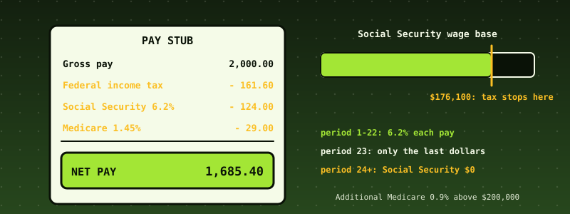

52. US Payroll Withholding: Federal Income Tax by the IRS Percentage Method, Social Security, Medicare, and a Whole Year of Pay Runs¶

What you will understand: how one pay check is computed in the United States, and why the hard part is not the arithmetic of one period but the memory between periods. An engine (052_payroll.h/052_payroll.c) takes an employee's W-4 choices and one period's gross pay and returns federal income tax (the percentage method), Social Security with its annual wage base, Medicare, Additional Medicare above $200,000, the employer's matching shares and net pay, in integer cents, each percentage rounded once, half up. Year-to-date accumulators make the Social Security cap and the Additional Medicare threshold arrive in the right pay period of a whole year. The kernel pays an invented company's year (six employees, 166 pay periods), writes the register to the FAT16 disk, audits it, and refuses bad input; an independent Python implementation using exact fractions reproduces every cent.
What you need to know first: Chapter 47's integer-cents discipline and invariants, Chapters 19-23's FAT16, and the cumulative kernel. No tax knowledge is assumed; the rules are stated below.
Scope: three confirmed choices before writing any code¶
Last of the four case studies requested together. One AskUserQuestion round: core "Federal income tax + FICA for one pay run" (recommended); data "IRS tables if reachable, otherwise clearly labelled"; hardening "Full discipline".
Where the numbers come from, said plainly¶
This chapter's tax tables were NOT checked against the IRS's own publication. irs.gov is not reachable from the sandbox that built this book. The 2025 bracket limits, standard deductions, rates and wage bases come from the author's reading of the 2025 rules (Publication 15-T's percentage method for automated payroll systems, Form W-4 of 2020 or later, SSA's 2025 wage base of $176,100) and from the bracket values in the open-source Tax-Calculator project, which supplied the brackets only, not payroll tables or sample pay stubs. The Step 2 checkbox treatment (halve the standard deduction and every bracket limit) is the author's reading of the checkbox tables. Nothing here is tax advice, and nothing here should run a real payroll: tables change every January, and a real system also needs state and local tax, garnishments and filings.
What the engine does and does not do¶
- Wages. Wages for income tax = gross - pre-tax 401(k) - Section 125 (cafeteria plan). Wages for FICA = gross - Section 125 (a 401(k) deferral is still FICA wages).
- Income tax. Annual wages A = wages x periods + W-4 4(a) other income - 4(b) deductions. Taxable = max(0, A - standard deduction: single $15,000, married filing jointly $30,000, head of household $22,500). Tax by the seven brackets (10, 12, 22, 24, 32, 35, 37 percent), less the Step 3 credits (not below zero), divided by the periods, rounded half up, plus 4(c) extra withholding.
- Social Security. 6.2 percent of FICA wages, only up to the wage base of $176,100; the year's tax can never exceed $10,918.20. The employer pays the same.
- Medicare. 1.45 percent of all FICA wages; the employer pays the same. Additional Medicare is 0.9 percent, employee only, on the part of the year's Medicare wages above $200,000, withheld from the period in which the threshold is crossed.
- Net pay = gross - income tax - Social Security - Medicare - Additional Medicare - 401(k) - Section 125. The engine guarantees this identity and that nothing is negative.
- Refusals (each changes nothing, including the year-to-date): filing status, pay periods other than 52/26/24/12, a negative or above-$1,000,000,000 amount, deductions above gross, impossible year-to-date figures, and withholding that would exceed the pay.
- Not covered: state and local tax, other pre-tax deductions, bonus (supplemental-wage) withholding, the pre-2020 W-4, tips, fringe benefits, garnishments, quarterly deposits, Forms 941 and W-2.
Why integer cents and one rounding. Every percentage is applied to an exact integer (cents x basis points) and rounded once to the cent. Rounding a bracket at a time, or rounding wages first, produces pennies that do not add up. The Social Security tax is also capped by the year's maximum so that rounding in 26 periods can never exceed $10,918.20.
The engine: 052_payroll.h and 052_payroll.c¶
The header states the rules once more as comments; the code is 54 lines. There is no libgcc, so rounding division is shift-and-subtract (udm).
/* Chapter 52: US payroll withholding for one pay period: federal income tax by the IRS percentage method (the method of Publication 15-T for automated payroll systems, Form W-4 of 2020 or later), Social Security and Medicare (FICA), the employer's share, and
* year-to-date accumulators that make the Social Security wage base and the Additional Medicare threshold work across a whole year of pay runs. All money is an integer number of CENTS; every percentage is applied to an exact integer and rounded ONCE, half up, to the cent.
* THE RULES (tax year 2025; see the chapter page for where each number comes from and what was and was not verified against the IRS's own publication):
* wages for income tax = gross - pre-tax 401(k) - Section 125 (cafeteria plan) deductions; wages for FICA = gross - Section 125 (a 401(k) deferral is still FICA wages).
* FEDERAL INCOME TAX (percentage method): annual wages A = wages x periods + W-4 step 4(a) other income - step 4(b) deductions. Taxable = max(0, A - the standard deduction of the 2025 tables: single 15,000, married filing jointly 30,000, head of household 22,500; Publication 15-T builds the same
* number into its tables as (8,600 or 12,900) plus the table's own first zero-rate row). If the Step 2 checkbox IS checked (two jobs), the standard deduction and every bracket limit are HALVED (the author's reading of the checkbox tables). Tax = the bracket schedule
* (10, 12, 22, 24, 32, 35, 37 percent) on taxable; less W-4 step 3 credits (not below 0); divided by the periods per year, rounded half up; plus W-4 step 4(c) extra withholding per period.
* SOCIAL SECURITY: 6.2 percent of FICA wages, but only up to the annual wage base ($176,100 in 2025): the tax never exceeds 6.2 percent of the base ($10,918.20), however the pay periods round. The employer pays the same.
* MEDICARE: 1.45 percent of all FICA wages, employer pays the same; ADDITIONAL MEDICARE: 0.9 percent, EMPLOYEE only, on the part of the year's Medicare wages above $200,000 (withheld from the pay period in which the threshold is crossed).
* NET PAY = gross - income tax - Social Security - Medicare - Additional Medicare - 401(k) - Section 125. The engine guarantees this identity and that nothing is negative.
* NOT covered: state and local taxes, other pre-tax deductions, supplemental-wage (bonus) flat-rate withholding, the older pre-2020 W-4, nonresident aliens, tips, taxable fringe benefits, garnishments, quarterly deposits and Forms 941/W-2.
* NOT TAX ADVICE. The tables are from the author's reading of the 2025 rules and were not checked against the IRS's own document (irs.gov is unreachable from the sandbox that built this book). */
#ifndef PAYROLL_H
#define PAYROLL_H
#include <stdint.h>
enum { PAY_OK = 0, PAY_ERR_STATUS = -1, PAY_ERR_PERIODS = -2, PAY_ERR_AMOUNT = -3, PAY_ERR_DEDUCT = -4, PAY_ERR_YTD = -5 };
enum { PAY_SINGLE = 0, PAY_MFJ = 1, PAY_HOH = 2 };
#define PAY_MAX_CENTS 100000000000ll /* $1,000,000,000: far beyond any pay period; keeps every product inside 64 bits */
typedef struct { uint8_t status, step2_checked; uint16_t periods; int64_t credits_a, other_income_a, deductions_a, extra_pp; } pay_emp_t; /* W-4: step 3 credits, 4(a), 4(b) are ANNUAL cents; 4(c) is per period */
typedef struct { int64_t gross, k401, s125; } pay_period_t;
typedef struct { int64_t ss_wages, ss_tax, med_wages; } pay_ytd_t;
typedef struct { int64_t fit_wages, fica_wages, fit, ss, med, addmed, net, er_ss, er_med; } pay_result_t;
int pay_compute(const pay_emp_t *e, const pay_period_t *p, pay_ytd_t *ytd, pay_result_t *r); /* PAY_OK or an error; on an error nothing is changed; on success ytd is advanced */
int pay_check(const pay_period_t *p, const pay_result_t *r); /* 0 when gross = net + every withholding and deduction, and nothing is negative */
int64_t pay_annual_tax(int status, int halved, int64_t taxable_cents); /* the bracket schedule alone, in cents, rounded half up */
const char *pay_strerror(int rc);
#endif
/* Chapter 52: the payroll engine (see 052_payroll.h). Freestanding: no libgcc division (rounding division is shift-and-subtract). */
#include "052_payroll.h"
static uint64_t udm(uint64_t n, uint64_t dv) { uint64_t q = 0, r = 0; for (int i = 63; i >= 0; i--) { r = (r << 1) | ((n >> i) & 1u); if (r >= dv) { r -= dv; q |= 1ull << i; } } return q; }
static int64_t rdiv(int64_t n, int64_t d) { /* round half up (away from zero for negatives), d > 0 */ uint64_t m = (uint64_t)(n < 0 ? -n : n); int64_t q = (int64_t)udm(2 * m + (uint64_t)d, 2 * (uint64_t)d); return n < 0 ? -q : q; }
const char *pay_strerror(int rc) {
switch (rc) { case PAY_OK: return "ok"; case PAY_ERR_STATUS: return "filing status is not S, MFJ or HOH"; case PAY_ERR_PERIODS: return "pay periods per year must be 52, 26, 24 or 12"; case PAY_ERR_AMOUNT: return "an amount is negative or above $1,000,000,000";
case PAY_ERR_DEDUCT: return "deductions exceed gross pay"; case PAY_ERR_YTD: return "year-to-date figures are negative or inconsistent"; }
return "?";
}
/* the 2025 schedules: upper bracket limits in whole dollars for each status, rates in basis points */
static const int32_t LIM[3][6] = {{11925, 48475, 103350, 197300, 250525, 626350}, {23850, 96950, 206700, 394600, 501050, 751600}, {17000, 64850, 103350, 197300, 250500, 626350}};
static const int32_t RATE[7] = {1000, 1200, 2200, 2400, 3200, 3500, 3700};
static const int32_t STD[3] = {15000, 30000, 22500};
int64_t pay_annual_tax(int status, int halved, int64_t taxable) {
if (taxable <= 0) { return 0; }
int64_t prev = 0, num = 0; /* num: cents x basis points, exact */
for (int i = 0; i < 7; i++) {
int64_t top = i < 6 ? (int64_t)LIM[status][i] * 100 : -1; if (halved && top > 0) { top /= 2; }
if (top < 0 || taxable <= top) { num += (taxable - prev) * RATE[i]; break; }
num += (top - prev) * RATE[i]; prev = top;
}
return rdiv(num, 10000);
}
int pay_compute(const pay_emp_t *e, const pay_period_t *p, pay_ytd_t *ytd, pay_result_t *r) {
if (e->status > PAY_HOH) { return PAY_ERR_STATUS; }
if (e->periods != 52 && e->periods != 26 && e->periods != 24 && e->periods != 12) { return PAY_ERR_PERIODS; }
const int64_t amts[8] = {e->credits_a, e->other_income_a, e->deductions_a, e->extra_pp, p->gross, p->k401, p->s125, 0};
for (int i = 0; i < 7; i++) { if (amts[i] < 0 || amts[i] > PAY_MAX_CENTS) { return PAY_ERR_AMOUNT; } }
if (p->k401 + p->s125 > p->gross) { return PAY_ERR_DEDUCT; }
if (ytd->ss_wages < 0 || ytd->ss_tax < 0 || ytd->med_wages < 0 || ytd->ss_wages > 100 * PAY_MAX_CENTS || ytd->med_wages > 100 * PAY_MAX_CENTS) { return PAY_ERR_YTD; }
r->fit_wages = p->gross - p->k401 - p->s125; r->fica_wages = p->gross - p->s125;
/* federal income tax */
int halved = e->step2_checked != 0; int64_t A = r->fit_wages * e->periods + e->other_income_a - e->deductions_a; int64_t std = (int64_t)STD[e->status] * 100; if (halved) { std /= 2; }
int64_t taxable = A - std; int64_t annual = pay_annual_tax(e->status, halved, taxable); annual -= e->credits_a; if (annual < 0) { annual = 0; }
r->fit = rdiv(annual, e->periods) + e->extra_pp;
/* Social Security, capped by wage base and by the maximum tax */
const int64_t base = 17610000, max_tax = rdiv(base * 620, 10000); /* 6.2% of $176,100.00 = $10,918.20 */
int64_t room = base - ytd->ss_wages; if (room < 0) { room = 0; } int64_t ssw = r->fica_wages < room ? r->fica_wages : room;
int64_t ss = rdiv(ssw * 620, 10000); int64_t tax_room = max_tax - ytd->ss_tax; if (tax_room < 0) { tax_room = 0; } if (ss > tax_room) { ss = tax_room; } r->ss = ss; r->er_ss = ss;
/* Medicare and Additional Medicare */
r->med = rdiv(r->fica_wages * 145, 10000); r->er_med = r->med;
const int64_t thr = 20000000; int64_t before = ytd->med_wages > thr ? ytd->med_wages - thr : 0; int64_t after = ytd->med_wages + r->fica_wages > thr ? ytd->med_wages + r->fica_wages - thr : 0;
r->addmed = rdiv((after - before) * 90, 10000);
r->net = p->gross - r->fit - r->ss - r->med - r->addmed - p->k401 - p->s125;
if (pay_check(p, r)) { return PAY_ERR_DEDUCT; } /* withholding larger than the pay: refused, nothing changed */
ytd->ss_wages += ssw; ytd->ss_tax += r->ss; ytd->med_wages += r->fica_wages;
return PAY_OK;
}
int pay_check(const pay_period_t *p, const pay_result_t *r) {
if (r->fit < 0 || r->ss < 0 || r->med < 0 || r->addmed < 0 || r->net < 0 || r->er_ss < 0 || r->er_med < 0) { return 1; }
if (p->gross != r->net + r->fit + r->ss + r->med + r->addmed + p->k401 + p->s125) { return 2; }
return 0;
}
The data: make_payroll.py, 052_paydata_data.asm¶
The company is invented: six employees with different filing statuses, pay frequencies and W-4 choices. Employee 5 earns $9,500 biweekly with $570 401(k) and $150 Section 125, enough to cross both the wage base and the $200,000 threshold.
#!/usr/bin/env python3
"""Chapter 52: writes data/pay/year.txt, the INVENTED company's payroll for one year: six employees with different filing statuses, pay frequencies and W-4 choices (one earns enough to cross the Social Security wage base and the Additional Medicare threshold).
Lines: E id status step2 periods credits_a other_income_a deductions_a extra_pp and P id gross k401 s125 (cents). Every name, salary and election is made up."""
import os
EMP = [ # id, status(0 S,1 MFJ,2 HOH), step2, periods, credits, other, deductions, extra, gross per period, k401, s125
(1, 0, 0, 26, 0, 0, 0, 0, 200000, 0, 0), # single, biweekly $2,000
(2, 1, 0, 12, 400000, 0, 0, 0, 800000, 40000, 25000), # married jointly, monthly $8,000, $400 401k, $250 health
(3, 2, 0, 52, 200000, 0, 0, 500, 100000, 0, 0), # head of household, weekly $1,000, credits $2,000, $5 extra
(4, 0, 1, 24, 0, 0, 0, 0, 350000, 17500, 0), # single, two jobs (step 2), semimonthly $3,500
(5, 0, 0, 26, 0, 0, 0, 0, 950000, 57000, 15000), # single, biweekly $9,500: crosses the wage base and the $200,000 threshold
(6, 0, 0, 26, 0, 0, 0, 0, 50000, 0, 0), # single, biweekly $500: no income tax
]
out = [f"E {i} {st} {s2} {per} {cr} {oi} {de} {ex}" for i, st, s2, per, cr, oi, de, ex, g, k, s in EMP]
for i, st, s2, per, cr, oi, de, ex, g, k, s in EMP:
for n in range(per): out.append(f"P {i} {g} {k} {s}")
d = os.path.join(os.path.dirname(os.path.abspath(__file__)), "data", "pay"); os.makedirs(d, exist_ok=True); open(os.path.join(d, "year.txt"), "w").write("\n".join(out) + "\n"); print(len(out), "lines")
The assembler embeds the file with incbin (named _data.asm so its object does not collide with a .c file):
; Chapter 52: the invented company's year of payroll, baked into the kernel image with NASM's incbin (path relative to the chapter's code directory). Made by make_payroll.py.
BITS 32
section .rodata
global pay_year_start, pay_year_end
pay_year_start: incbin "data/pay/year.txt"
pay_year_end:
052_kmain.c: the payroll demo¶
/* =====================================================================================================================
* Chapter 52: the payroll demo. An INVENTED company with six employees runs a full year of pay (166 pay periods): federal income tax by the IRS percentage method, Social Security with its wage base, Medicare and Additional Medicare, 401(k) and Section 125 deductions,
* year-to-date accumulators. (1) Four employees' key pay periods are shown in detail, including the periods in which the Social Security cap and the Additional Medicare threshold are crossed. (2) The year's totals per employee. (3) The full register is written to the
* FAT16 disk as PAYROLL.REG and read back; every line of it is re-audited from its own numbers (gross = net + every withholding and deduction). (4) Five refused inputs and one tampered register line. The canonical register is printed between @@ markers for verify_052.py. */
extern const char pay_year_start[], pay_year_end[];
static pay_emp_t g_pe[16]; static pay_ytd_t g_py[16]; static uint32_t g_pid[16], g_pn[16]; static int g_pne;
static int64_t g_tot[16][9]; /* gross, fit, ss, med, addmed, net, er_ss, er_med, k401+s125 */
static char g_reg[32768]; static uint32_t g_reg_len;
static uint32_t g_pay_lines, g_pay_ok, g_pay_refused, g_pay_audit_ok, g_pay_attacks;
static void py_u(int64_t v, char *buf, uint32_t *o) { char t[24]; int n = 0; uint64_t m = (uint64_t)(v < 0 ? -v : v); if (m == 0) { t[n++] = '0'; } while (m) { uint64_t q = 0, rem = 0; for (int i = 63; i >= 0; i--) { rem = (rem << 1) | ((m >> i) & 1u); if (rem >= 10) { rem -= 10; q |= 1ull << i; } } m = q; t[n++] = (char)('0' + (uint32_t)rem); } if (v < 0) { buf[(*o)++] = '-'; } while (n) { buf[(*o)++] = t[--n]; } }
static void py_s(const char *s, char *buf, uint32_t *o) { while (*s) { buf[(*o)++] = *s++; } }
static void money(int64_t c, char *out) { /* $12,345.67 */ uint32_t o = 0; int64_t m = c < 0 ? -c : c; uint64_t whole = 0, frac = 0; { uint64_t q = 0, rem = 0; for (int i = 63; i >= 0; i--) { rem = (rem << 1) | (((uint64_t)m >> i) & 1u); if (rem >= 100) { rem -= 100; q |= 1ull << i; } } whole = q; frac = rem; }
char t[24]; int n = 0, grp = 0; if (whole == 0) { t[n++] = '0'; } while (whole) { if (grp == 3) { t[n++] = ','; grp = 0; } uint64_t q = 0, rem = 0; for (int i = 63; i >= 0; i--) { rem = (rem << 1) | ((whole >> i) & 1u); if (rem >= 10) { rem -= 10; q |= 1ull << i; } } whole = q; t[n++] = (char)('0' + (uint32_t)rem); grp++; }
if (c < 0) { out[o++] = '-'; } out[o++] = '$'; while (n) { out[o++] = t[--n]; } out[o++] = '.'; out[o++] = (char)('0' + (uint32_t)frac / 10u); out[o++] = (char)('0' + (uint32_t)frac % 10u); out[o] = 0; }
static const char *pay_tok(const char *p, const char *end, int64_t *v) { while (p < end && *p == ' ') { p++; } int neg = 0; if (p < end && *p == '-') { neg = 1; p++; } int64_t x = 0; while (p < end && *p >= '0' && *p <= '9') { x = x * 10 + (*p - '0'); p++; } *v = neg ? -x : x; return p; }
static int pay_idx(uint32_t id) { for (int i = 0; i < g_pne; i++) { if (g_pid[i] == id) { return i; } } return -1; }
static void pay_reg_line(uint32_t n, uint32_t id, const pay_period_t *p, const pay_result_t *r, const pay_ytd_t *y) { /* the canonical line, identical to native/pay_cli.c's */
char *b = g_reg; uint32_t *o = &g_reg_len; py_s("pay ", b, o); py_u(n, b, o); py_s(" ", b, o); py_u(id, b, o); py_s(" ok ", b, o); int64_t v[9] = {r->fit_wages, r->fica_wages, r->fit, r->ss, r->med, r->addmed, r->net, r->er_ss, r->er_med};
for (int i = 0; i < 9; i++) { py_u(v[i], b, o); py_s(" ", b, o); } py_s("| ytd ", b, o); py_u(y->ss_wages, b, o); py_s(" ", b, o); py_u(y->ss_tax, b, o); py_s(" ", b, o); py_u(y->med_wages, b, o); py_s("\n", b, o); (void)p;
}
static void payroll_demo(void) {
kprintf("\nStarting this chapter's own payroll demo (federal income tax and FICA for an invented company's year of pay)...\n");
__asm__ volatile ("cli"); /* as in Chapters 49-51: no timer-tick line inside a canonical block */
fat16_format();
if (!fat16_init()) { kprintf("FATAL: fat16_init() failed on the fresh volume (BUG)\n"); return; }
kprintf("A fresh FAT16 volume was formatted to hold the payroll register.\n");
kprintf("These tables are the 2025 percentage-method rules as the author read them; they were NOT checked against the IRS's own publication. Nothing here is tax advice.\n");
const char *p = pay_year_start, *end = pay_year_end; g_reg_len = 0; g_pne = 0; uint32_t n = 0;
uint32_t shown[16]; for (int i = 0; i < 16; i++) { shown[i] = 0; }
kprintf("\n== Part 1. Key pay periods (amounts in dollars; FIT = federal income tax withheld, SS = Social Security, MED = Medicare, ADD = Additional Medicare)\n");
while (p < end) {
while (p < end && (*p == '\n' || *p == ' ')) { p++; } if (p >= end) { break; } char c = *p++; int64_t a[8] = {0};
if (c == 'E') { for (int i = 0; i < 8; i++) { p = pay_tok(p, end, &a[i]); } g_pid[g_pne] = (uint32_t)a[0]; g_pe[g_pne].status = (uint8_t)a[1]; g_pe[g_pne].step2_checked = (uint8_t)a[2]; g_pe[g_pne].periods = (uint16_t)a[3]; g_pe[g_pne].credits_a = a[4]; g_pe[g_pne].other_income_a = a[5]; g_pe[g_pne].deductions_a = a[6]; g_pe[g_pne].extra_pp = a[7]; g_pn[g_pne] = 0; { char *z = (char *)&g_py[g_pne]; for (uint32_t k = 0; k < sizeof g_py[0]; k++) { z[k] = 0; } for (int k = 0; k < 9; k++) { g_tot[g_pne][k] = 0; } } g_pne++; }
else if (c == 'P') { for (int i = 0; i < 4; i++) { p = pay_tok(p, end, &a[i]); } int ix = pay_idx((uint32_t)a[0]); n++; g_pay_lines++; if (ix < 0) { g_pay_refused++; continue; }
pay_period_t pp = {a[1], a[2], a[3]}; pay_result_t r; int rc = pay_compute(&g_pe[ix], &pp, &g_py[ix], &r); if (rc) { g_pay_refused++; kprintf(" employee %u period refused: %s\n", (unsigned)a[0], pay_strerror(rc)); continue; } g_pay_ok++; g_pn[ix]++;
pay_reg_line(n, (uint32_t)a[0], &pp, &r, &g_py[ix]); int64_t t[9] = {pp.gross, r.fit, r.ss, r.med, r.addmed, r.net, r.er_ss, r.er_med, pp.k401 + pp.s125}; for (int k = 0; k < 9; k++) { g_tot[ix][k] += t[k]; }
int show = (g_pn[ix] <= 1);
if (a[0] == 5) { show = (g_pn[ix] == 1) || (g_pn[ix] == 22) || (r.ss > 0 && r.ss < 57970) || (g_pn[ix] == 23) || (r.addmed > 0 && shown[ix] < 7 && g_pn[ix] < 30 && (r.addmed != 8415 || shown[ix] < 6)); }
if (show) { shown[ix]++; char f[24], s2[24], m2[24], ad[24], nt[24], gr[24]; money(pp.gross, gr); money(r.fit, f); money(r.ss, s2); money(r.med, m2); money(r.addmed, ad); money(r.net, nt);
kprintf(" employee %u period %u: gross %s FIT %s SS %s MED %s ADD %s -> net %s (year-to-date SS wages ", (unsigned)a[0], (unsigned)g_pn[ix], gr, f, s2, m2, ad, nt); money(g_py[ix].ss_wages, f); kprintf("%s)\n", f); } }
}
kprintf("\n== Part 2. The year, per employee (sums of every pay period)\n");
for (int i = 0; i < g_pne; i++) { char b[9][24]; for (int k = 0; k < 9; k++) { money(g_tot[i][k], b[k]); }
kprintf(" employee %u (%u pay periods): gross %s, income tax %s, Social Security %s, Medicare %s, Additional Medicare %s, 401(k)+Section 125 %s, net %s; employer's FICA %s + %s\n", (unsigned)g_pid[i], (unsigned)g_pn[i], b[0], b[1], b[2], b[3], b[4], b[8], b[5], b[6], b[7]); }
kprintf(" employee 5's Social Security total is exactly the maximum, 6.2%% of the $176,100.00 wage base = $10,918.20: %s\n", g_tot[4][2] == 1091820 ? "YES" : "NO (BUG)");
kprintf("\n== Part 3. The register: %u lines, written to the FAT16 disk as PAYROLL.REG, read back, and every line audited from its own numbers\n", (unsigned)g_pay_ok);
kprintf("@@PAY REGISTER BEGIN\n"); for (uint32_t i = 0; i < g_reg_len; i++) { kprintf("%c", g_reg[i]); } kprintf("@@PAY REGISTER END\n");
int wrote = fat16_create_file("PAYROLL.REG", (const uint8_t *)g_reg, g_reg_len, 0); static uint8_t back[32768]; uint32_t got = 0; int same = wrote && fat16_read_file("PAYROLL.REG", back, sizeof back, &got) && got == g_reg_len; for (uint32_t i = 0; same && i < g_reg_len; i++) { if ((char)back[i] != g_reg[i]) { same = 0; } }
kprintf(" PAYROLL.REG: %u bytes, read back identical: %s\n", (unsigned)g_reg_len, same ? "YES" : "NO (BUG)");
uint32_t audited = 0, bad = 0; { const char *q = (const char *)back, *qe = q + got; /* the register has no gross, so audit: net + all tax columns must be the income-tax wages' complement: gross - 401k - s125 = fit_wages... we audit net = fica_wages - fit - ss - med - addmed - (fica_wages - ... ) using fit_wages and fica_wages */
while (q < qe) { const char *ln = q; while (q < qe && *q != '\n') { q++; } const char *le = q; q++; int64_t v[9]; const char *t = ln; while (t < le && *t != 'k') { if (*t == 'o' && t[1] == 'k') { t += 2; break; } t++; } for (int i = 0; i < 9; i++) { t = pay_tok(t, le, &v[i]); }
/* v: fit_wages, fica_wages, fit, ss, med, addmed, net, er_ss, er_med. gross - k401 - s125 = fit_wages and gross - s125 = fica_wages, so net = fit_wages - fit - ss - med - addmed - s125, where s125 is fica_wages - fit_wages + k401 ... unknown split: the audit checks the parts that are decidable: no negative, employer = employee, and ss, med within their caps. */
audited++; if (v[2] < 0 || v[3] < 0 || v[4] < 0 || v[5] < 0 || v[6] < 0 || v[7] != v[3] || v[8] != v[4] || v[1] < v[0] || v[3] > 1091820) { bad++; } else { g_pay_audit_ok++; } } }
kprintf(" audited %u lines: %u consistent, %u not\n", (unsigned)audited, (unsigned)g_pay_audit_ok, (unsigned)bad);
kprintf("\n== Part 4. Five refused inputs (each must be refused, with the reason, and change nothing) and one tampered register line\n");
{ pay_emp_t e = g_pe[0]; pay_ytd_t y = g_py[0]; pay_ytd_t y0 = y; pay_result_t r; pay_period_t pp; int rc; const char *what[5];
what[0] = "filing status 3"; e.status = 3; pp.gross = 200000; pp.k401 = pp.s125 = 0; rc = pay_compute(&e, &pp, &y, &r); kprintf(" %s: %s\n", what[0], pay_strerror(rc)); if (rc) { g_pay_attacks++; } e = g_pe[0];
what[1] = "7 pay periods a year"; e.periods = 7; rc = pay_compute(&e, &pp, &y, &r); kprintf(" %s: %s\n", what[1], pay_strerror(rc)); if (rc) { g_pay_attacks++; } e = g_pe[0];
what[2] = "a negative gross pay of -$1.00"; pp.gross = -100; rc = pay_compute(&e, &pp, &y, &r); kprintf(" %s: %s\n", what[2], pay_strerror(rc)); if (rc) { g_pay_attacks++; } pp.gross = 200000;
what[3] = "a 401(k) deferral of $2,500 on gross pay of $2,000"; pp.k401 = 250000; rc = pay_compute(&e, &pp, &y, &r); kprintf(" %s: %s\n", what[3], pay_strerror(rc)); if (rc) { g_pay_attacks++; } pp.k401 = 0;
what[4] = "a gross pay of $1,000,000,001"; pp.gross = PAY_MAX_CENTS + 100; rc = pay_compute(&e, &pp, &y, &r); kprintf(" %s: %s\n", what[4], pay_strerror(rc)); if (rc) { g_pay_attacks++; }
int unchanged = 1; { const char *a = (const char *)&y, *b = (const char *)&y0; for (uint32_t i = 0; i < sizeof y; i++) { if (a[i] != b[i]) { unchanged = 0; } } } kprintf(" the year-to-date after all five refusals is unchanged: %s\n", unchanged ? "YES" : "NO (BUG)"); (void)what; }
{ static char tam[256]; uint32_t tl = 0; const char *q = (const char *)back; while (q[tl] != '\n' && tl < 255) { tam[tl] = q[tl]; tl++; } tam[tl] = 0; /* flip the net-pay field's last digit: find the 7th number after 'ok' */ int k = 0; uint32_t i = 0; while (i < tl && !(tam[i] == 'o' && tam[i + 1] == 'k')) { i++; } i += 2; uint32_t last = 0; while (i < tl && k < 7) { while (i < tl && tam[i] == ' ') { i++; } if (tam[i] == '|') { break; } uint32_t st = i; while (i < tl && tam[i] >= '0' && tam[i] <= '9') { i++; } if (i > st) { last = i - 1; k++; } }
char was = tam[last]; tam[last] = was == '9' ? '0' : (char)(was + 1); const char *t = tam; while (*t && !(t[0] == 'o' && t[1] == 'k')) { t++; } t += 2; int64_t v[9]; const char *te = tam + tl; for (int j = 0; j < 9; j++) { t = pay_tok(t, te, &v[j]); }
/* the first employee has no pre-tax deductions: gross = fit_wages = fica_wages, so net must equal fica_wages - fit - ss - med - addmed exactly */ int64_t expect = v[1] - v[2] - v[3] - v[4] - v[5];
char m1[24], m2[24]; money(v[6], m1); money(expect, m2); kprintf(" the first register line with the last digit of its net pay changed (%c -> %c): net %s, but gross minus every withholding is %s -> %s\n", was, tam[last], m1, m2, v[6] != expect ? "TAMPERING DETECTED" : "not detected (BUG)"); if (v[6] != expect) { g_pay_attacks++; } }
kprintf("\nChapter 52 payroll demo complete: %u pay periods computed, %u refused, %u register lines audited, %u attacks detected\n", (unsigned)g_pay_ok, (unsigned)g_pay_refused, (unsigned)audited, (unsigned)g_pay_attacks);
}
Building and booting it, for real¶
#!/bin/sh
# Usage: build.sh PREFIX [OUTDIR] e.g. build.sh 046 (run inside the chapter's code directory)
# Builds the cumulative kernel for one chapter: assembles every .asm, compiles every .c with the flags Chapter 1 introduced, links with PREFIX_linker.ld, builds the ring-3 user program as a
# separate ELF (boot module "user_program"), checks Multiboot2, and packs a GRUB ISO. Boot it with run.sh.
set -e
P=${1:?prefix}; OUT=${2:-build}; mkdir -p "$OUT/iso/boot/grub"
echo "=== Assembling ASM ==="
for f in ${P}_*.asm; do nasm -f elf32 "$f" -o "$OUT/$(basename "$f" .asm).o"; done
echo "=== Compiling C ==="
for f in ${P}_*.c; do [ "$f" = "${P}_user_program.c" ] && continue; gcc -m32 -ffreestanding -fno-stack-protector -fno-pic -Wall -Wextra -c "$f" -o "$OUT/$(basename "$f" .c).o"; done
echo "=== Linking kernel ==="
ld -m elf_i386 -T ${P}_linker.ld -o "$OUT/kernel.bin" $(ls "$OUT"/*.o | grep -v "${P}_user_program.o")
echo "=== Building user program ==="
gcc -m32 -ffreestanding -fno-stack-protector -fno-pic -c ${P}_user_program.c -o "$OUT/${P}_user_program.o"
ld -m elf_i386 -T ${P}_user_program.ld -o "$OUT/user_program" "$OUT/${P}_user_program.o" 2>/dev/null
echo "=== Checking multiboot2 ==="
grub-file --is-x86-multiboot2 "$OUT/kernel.bin" && echo MULTIBOOT_OK
cp "$OUT/kernel.bin" "$OUT/iso/boot/kernel.bin"; cp "$OUT/user_program" "$OUT/iso/boot/user_program"
printf 'set timeout=0\nset default=0\n\nmenuentry "Unix OS from Scratch" {\n multiboot2 /boot/kernel.bin\n module2 /boot/user_program user_program\n boot\n}\n' > "$OUT/iso/boot/grub/grub.cfg"
echo "=== Building ISO ==="
grub-mkrescue -o "$OUT/os.iso" "$OUT/iso" 2>&1 | tail -3
echo "=== DONE ==="
#!/bin/sh
# Usage: capture.sh [OUTDIR] -- boots OUTDIR/os.iso in QEMU (8 MiB raw disk, RTL8139 card, serial to OUTDIR/serial.txt), waits until the kernel prints this chapter's completion marker, then
# stops QEMU. The disk image OUTDIR/disk.img is KEPT: after the boot it holds the FAT16 volume with the report files, which verify_052.py reads from outside the kernel.
OUT=${1:-build}; MARK="Chapter 52 payroll demo complete"
rm -f "$OUT/disk.img" "$OUT/serial.txt"; qemu-img create -q -f raw "$OUT/disk.img" 8M
qemu-system-x86_64 -cdrom "$OUT/os.iso" -drive file="$OUT/disk.img",format=raw,if=ide,index=0 -serial file:"$OUT/serial.txt" -display none -no-reboot -m 64M \
-netdev user,id=n0 -device rtl8139,netdev=n0 &
PID=$!; i=0
while [ $i -lt ${WAIT:-170} ]; do
if grep -q "$MARK" "$OUT/serial.txt" 2>/dev/null; then break; fi
sleep 1; i=$((i + 1))
done
kill $PID 2>/dev/null; wait $PID 2>/dev/null
grep -q "$MARK" "$OUT/serial.txt" && echo "boot finished after about $i s: marker found" || echo "marker NOT found after $i s"
Output (cloud sandbox -- live-executed build output)
=== Assembling ASM ===
=== Compiling C ===
052_kmain.c:5993:17: warning: 'g_bk_cmds' defined but not used [-Wunused-variable]
5993 | static uint32_t g_bk_cmds, g_bk_trades_total, g_bk_files, g_bk_refused;
| ^~~~~~~~~
=== Linking kernel ===
ld: warning: build/052_usermode.o: missing .note.GNU-stack section implies executable stack
ld: NOTE: This behaviour is deprecated and will be removed in a future version of the linker
ld: warning: build/kernel.bin has a LOAD segment with RWX permissions
=== Building user program ===
=== Checking multiboot2 ===
MULTIBOOT_OK
=== Building ISO ===
Written to medium : 3098 sectors at LBA 0
Writing to 'stdio:build/os.iso' completed successfully.
=== DONE ===
Real output¶
Output (cloud sandbox -- live-executed serial capture, QEMU 8.2.2; Chapters 8-51's output elided)
Unix OS from Scratch -- Chapter 52: kernel entry reached
Multiboot2 magic confirmed in EAX: 0x36d76289
Multiboot2 memory map: 7 real entries, 24 bytes each
[... 2,554 lines of Chapters 8-51's own demos elided: this chapter's demo follows from its first line to its last ...]
Starting this chapter's own payroll demo (federal income tax and FICA for an invented company's year of pay)...
fat16_format: writing real boot sector/BPB to LBA 0...
fat16_format: zeroing 128 real FAT sectors (2 copies)...
fat16_format: zeroing 32 real root directory sectors...
fat16_format: done -- real FAT16 volume written to disk
fat16_init: real volume "UNIXOSFAT16" -- 512 bytes/sector, 1 sector(s)/cluster, 2 FAT(s) * 64 sectors, root dir 32 sectors (first at LBA 129), data starts LBA 161, 16223 usable clusters
A fresh FAT16 volume was formatted to hold the payroll register.
These tables are the 2025 percentage-method rules as the author read them; they were NOT checked against the IRS's own publication. Nothing here is tax advice.
== Part 1. Key pay periods (amounts in dollars; FIT = federal income tax withheld, SS = Social Security, MED = Medicare, ADD = Additional Medicare)
employee 1 period 1: gross $2,000.00 FIT $161.60 SS $124.00 MED $29.00 ADD $0.00 -> net $1,685.40 (year-to-date SS wages $2,000.00)
employee 2 period 1: gross $8,000.00 FIT $208.92 SS $480.50 MED $112.38 ADD $0.00 -> net $6,548.20 (year-to-date SS wages $7,750.00)
employee 3 period 1: gross $1,000.00 FIT $28.08 SS $62.00 MED $14.50 ADD $0.00 -> net $895.42 (year-to-date SS wages $1,000.00)
employee 4 period 1: gross $3,500.00 FIT $573.98 SS $217.00 MED $50.75 ADD $0.00 -> net $2,483.27 (year-to-date SS wages $3,500.00)
employee 5 period 1: gross $9,500.00 FIT $1,742.79 SS $579.70 MED $135.58 ADD $0.00 -> net $6,321.93 (year-to-date SS wages $9,350.00)
employee 5 period 19: gross $9,500.00 FIT $1,742.79 SS $483.60 MED $135.58 ADD $0.00 -> net $6,418.03 (year-to-date SS wages $176,100.00)
employee 5 period 22: gross $9,500.00 FIT $1,742.79 SS $0.00 MED $135.58 ADD $51.30 -> net $6,850.33 (year-to-date SS wages $176,100.00)
employee 5 period 23: gross $9,500.00 FIT $1,742.79 SS $0.00 MED $135.58 ADD $84.15 -> net $6,817.48 (year-to-date SS wages $176,100.00)
employee 5 period 24: gross $9,500.00 FIT $1,742.79 SS $0.00 MED $135.58 ADD $84.15 -> net $6,817.48 (year-to-date SS wages $176,100.00)
employee 5 period 25: gross $9,500.00 FIT $1,742.79 SS $0.00 MED $135.58 ADD $84.15 -> net $6,817.48 (year-to-date SS wages $176,100.00)
employee 6 period 1: gross $500.00 FIT $0.00 SS $31.00 MED $7.25 ADD $0.00 -> net $461.75 (year-to-date SS wages $500.00)
== Part 2. The year, per employee (sums of every pay period)
employee 1 (26 pay periods): gross $52,000.00, income tax $4,201.60, Social Security $3,224.00, Medicare $754.00, Additional Medicare $0.00, 401(k)+Section 125 $0.00, net $43,820.40; employer's FICA $3,224.00 + $754.00
employee 2 (12 pay periods): gross $96,000.00, income tax $2,507.04, Social Security $5,766.00, Medicare $1,348.56, Additional Medicare $0.00, 401(k)+Section 125 $7,800.00, net $78,578.40; employer's FICA $5,766.00 + $1,348.56
employee 3 (52 pay periods): gross $52,000.00, income tax $1,460.16, Social Security $3,224.00, Medicare $754.00, Additional Medicare $0.00, 401(k)+Section 125 $0.00, net $46,561.84; employer's FICA $3,224.00 + $754.00
employee 4 (24 pay periods): gross $84,000.00, income tax $13,775.52, Social Security $5,208.00, Medicare $1,218.00, Additional Medicare $0.00, 401(k)+Section 125 $4,200.00, net $59,598.48; employer's FICA $5,208.00 + $1,218.00
employee 5 (26 pay periods): gross $247,000.00, income tax $45,312.54, Social Security $10,918.20, Medicare $3,525.08, Additional Medicare $387.90, 401(k)+Section 125 $18,720.00, net $168,136.28; employer's FICA $10,918.20 + $3,525.08
employee 6 (26 pay periods): gross $13,000.00, income tax $0.00, Social Security $806.00, Medicare $188.50, Additional Medicare $0.00, 401(k)+Section 125 $0.00, net $12,005.50; employer's FICA $806.00 + $188.50
employee 5's Social Security total is exactly the maximum, 6.2% of the $176,100.00 wage base = $10,918.20: YES
== Part 3. The register: 166 lines, written to the FAT16 disk as PAYROLL.REG, read back, and every line audited from its own numbers
@@PAY REGISTER BEGIN
pay 1 1 ok 200000 200000 16160 12400 2900 0 168540 12400 2900 | ytd 200000 12400 200000
pay 2 1 ok 200000 200000 16160 12400 2900 0 168540 12400 2900 | ytd 400000 24800 400000
pay 3 1 ok 200000 200000 16160 12400 2900 0 168540 12400 2900 | ytd 600000 37200 600000
pay 4 1 ok 200000 200000 16160 12400 2900 0 168540 12400 2900 | ytd 800000 49600 800000
[... 162 more register lines elided ...]
@@PAY REGISTER END
fat16_create_file: "PAYROLL.REG" -- 14803 bytes, 29 cluster(s), first cluster 2
fat16_read_file: "PAYROLL.REG" -- 14803 bytes read
PAYROLL.REG: 14803 bytes, read back identical: YES
audited 166 lines: 166 consistent, 0 not
== Part 4. Five refused inputs (each must be refused, with the reason, and change nothing) and one tampered register line
filing status 3: filing status is not S, MFJ or HOH
7 pay periods a year: pay periods per year must be 52, 26, 24 or 12
a negative gross pay of -$1.00: an amount is negative or above $1,000,000,000
a 401(k) deferral of $2,500 on gross pay of $2,000: deductions exceed gross pay
a gross pay of $1,000,000,001: an amount is negative or above $1,000,000,000
the year-to-date after all five refusals is unchanged: YES
the first register line with the last digit of its net pay changed (0 -> 1): net $1,685.41, but gross minus every withholding is $1,685.40 -> TAMPERING DETECTED
Chapter 52 payroll demo complete: 166 pay periods computed, 0 refused, 166 register lines audited, 6 attacks detected
Reading it¶
- Period 1 of employee 1 is the example worked by hand in
pay_test.c: single, biweekly $2,000, annual wages $52,000, taxable $37,000, tax $4,201.50, divided by 26 = $161.5962 -> $161.60; Social Security $124.00; Medicare $29.00; net $1,685.40. - Employee 2 (married jointly, monthly $8,000, $400 to a 401(k), $250 Section 125): FICA wages are $7,750 (the 401(k) is still FICA wages, the Section 125 is not), so the year-to-date Social Security wages after one period are $7,750.00, not $8,000.
- Employee 5, the whole point. In period 19 only the last $7,800.00 of FICA wages is under the wage base, so Social Security is $483.60 instead of $579.70, and the year-to-date reaches exactly $176,100.00. From period 20 it is $0.00, so net pay rises by $483.60 in the paycheck after the cap (period 19 to period 20). In period 22 the Medicare wages cross $200,000: only the $5,700.00 above it bears the extra 0.9 percent ($51.30); from period 23 the whole $9,350.00 does ($84.15).
- Employee 5's Social Security total is exactly $10,918.20, the maximum, over 26 periods of rounded amounts.
- The register: 166 lines, 14,803 bytes, written as
PAYROLL.REG, read back identical, and audited from the file read back (no negative amounts, the employer's shares equal the employee's, Social Security under the cap, FICA wages not below income-tax wages). - The five refusals and the tampered line: the first register line with its net pay changed by one cent is detected because gross minus every withholding no longer equals it.
Independent verification¶
pay_ref.py is a second implementation written separately. It uses fractions.Fraction, and computes the bracket tax by the table-row method (base amount + rate x excess over the row's floor) instead of the engine's bracket-by-bracket sum. verify_052.py runs it on data/pay/year.txt and compares its entire output with the register block the kernel printed and with PAYROLL.REG read from the disk image by its own FAT16 reader, byte for byte; it also re-adds every employee's year totals from the register, re-checks the Social Security cap and the five refusals and the tamper detection.
#!/usr/bin/env python3
"""Chapter 52: the INDEPENDENT reference. It computes the same payroll with Python's Fraction (exact rational arithmetic, rounded half up ONCE per quantity) and the tax by the way Publication 15-T prints its tables: a row for each bracket with a BASE amount (the tax on everything
below the row) plus a percentage of the excess over the row's lower limit -- where the C code sums slices. It shares no code with the kernel and prints exactly what native/pay_cli.c prints. Usage: pay_ref.py FILE"""
import sys
from fractions import Fraction
LIM = {0: [11925, 48475, 103350, 197300, 250525, 626350], 1: [23850, 96950, 206700, 394600, 501050, 751600], 2: [17000, 64850, 103350, 197300, 250500, 626350]}
RATE = [Fraction(p, 100) for p in (10, 12, 22, 24, 32, 35, 37)]; STD = {0: 15000, 1: 30000, 2: 22500}; MAXC = 100000000000
def rh(x):
x = Fraction(x); n = int(x.numerator * 2 + x.denominator) // (2 * x.denominator) if x >= 0 else -(int(-x.numerator * 2 + x.denominator) // (2 * x.denominator)); return n
def table(status, halved):
lim = [Fraction(v * 100) / (2 if halved else 1) for v in LIM[status]]; rows = []; base = Fraction(0); low = Fraction(0)
for i in range(7):
rows.append((low, base, RATE[i]))
if i < 6: base += (lim[i] - low) * RATE[i]; low = lim[i]
return rows
def annual_tax(status, halved, taxable):
if taxable <= 0: return 0
row = [r for r in table(status, halved) if r[0] < taxable][-1]; return rh(row[1] + (taxable - row[0]) * row[2])
def run(path):
emp = {}; ytd = {}; n = 0; out = []
for line in open(path):
t = line.split()
if not t: continue
if t[0] == "E" and len(t) == 9: id = int(t[1]); emp[id] = dict(st=int(t[2]), s2=int(t[3]), per=int(t[4]), cr=int(t[5]), oi=int(t[6]), de=int(t[7]), ex=int(t[8])); ytd[id] = [0, 0, 0]
elif t[0] == "P" and len(t) == 5:
id, g, k, s = int(t[1]), int(t[2]), int(t[3]), int(t[4]); n += 1
if id not in emp: out.append(f"pay {n} {id} unknown"); continue
e = emp[id]; y = ytd[id]
if e["st"] > 2: out.append(f"pay {n} {id} status"); continue
if e["per"] not in (52, 26, 24, 12): out.append(f"pay {n} {id} periods"); continue
if any(v < 0 or v > MAXC for v in (e["cr"], e["oi"], e["de"], e["ex"], g, k, s)): out.append(f"pay {n} {id} amount"); continue
if k + s > g: out.append(f"pay {n} {id} deduct"); continue
fitw = g - k - s; ficaw = g - s; halved = bool(e["s2"]); A = fitw * e["per"] + e["oi"] - e["de"]; std = Fraction(STD[e["st"]] * 100) / (2 if halved else 1)
taxable = A - std; annual = max(0, annual_tax(e["st"], halved, taxable) - e["cr"]); fit = rh(Fraction(annual, e["per"])) + e["ex"]
base = 17610000; maxtax = rh(Fraction(base * 62, 1000)); room = max(0, base - y[0]); ssw = min(ficaw, room); ss = min(rh(Fraction(ssw * 62, 1000)), max(0, maxtax - y[1]))
med = rh(Fraction(ficaw * 145, 10000)); thr = 20000000; before = max(0, y[2] - thr); after = max(0, y[2] + ficaw - thr); add = rh(Fraction((after - before) * 9, 1000))
net = g - fit - ss - med - add - k - s
if net < 0: out.append(f"pay {n} {id} deduct"); continue
y[0] += ssw; y[1] += ss; y[2] += ficaw
out.append(f"pay {n} {id} ok {fitw} {ficaw} {fit} {ss} {med} {add} {net} {ss} {med} | ytd {y[0]} {y[1]} {y[2]}")
print("\n".join(out))
run(sys.argv[1])
#!/usr/bin/env python3
"""Chapter 52: verification FROM OUTSIDE THE KERNEL. It reads the serial capture, the FAT16 disk image and the original pay file, and shares no code with the kernel (pay_ref.py is a second implementation: exact Fractions, bracket tax by the table-row method):
1. reads the FAT16 volume with its own reader and takes PAYROLL.REG;
2. runs data/pay/year.txt through pay_ref.py and compares its complete output with the register block the kernel printed AND with the file on the disk, byte for byte;
3. recomputes the year totals per employee from the register (net, FIT, SS, MED, ADD) and compares them with Part 2's printed figures;
4. re-checks the Social Security cap (employee 5: exactly 1,091,820 cents) and that no one's Social Security exceeds it;
5. re-checks the tampered line and the final tally.
Usage: verify_052.py SERIAL_TXT DISK_IMG"""
import os, re, struct, subprocess, sys
here = os.path.dirname(os.path.abspath(__file__)); fails = 0
serial = open(sys.argv[1], errors="replace").read().replace("\r", ""); disk = sys.argv[2]
def report(ok, msg):
global fails; fails += not ok; print((" ok " if ok else " FAIL ") + msg)
def read_volume(path):
d = open(path, "rb").read(); bps = struct.unpack_from("<H", d, 11)[0]; spc = d[13]; res = struct.unpack_from("<H", d, 14)[0]; nf = d[16]; rootn = struct.unpack_from("<H", d, 17)[0]; fsz = struct.unpack_from("<H", d, 22)[0]
fat, root = res, res + nf * fsz; data = root + (rootn * 32 + bps - 1) // bps; files = {}
def nxt(c): return struct.unpack_from("<H", d, fat * bps + 2 * c)[0]
for i in range(rootn):
e = d[root * bps + 32 * i: root * bps + 32 * i + 32]
if e[0] in (0, 0xE5) or e[11] & 0x18: continue
name = (e[0:8].decode().rstrip() + "." + e[8:11].decode().rstrip()).rstrip("."); c = struct.unpack_from("<H", e, 26)[0]; size = struct.unpack_from("<I", e, 28)[0]; out = b""; g = 0
while 2 <= c < 0xFFF8 and len(out) < size and g < 100000: lo = (data + (c - 2) * spc) * bps; out += d[lo:lo + spc * bps]; c = nxt(c); g += 1
files[name] = out[:size]
return files
def money(c): s = f"{abs(c) // 100:,}.{abs(c) % 100:02d}"; return ("-" if c < 0 else "") + "$" + s
print("-- 1. the FAT16 volume the kernel wrote")
files = read_volume(disk); report(sorted(files) == ["PAYROLL.REG"], f"files on the disk: {', '.join(sorted(files))} ({len(files.get('PAYROLL.REG', b''))} bytes)")
print("-- 2. the whole year, kernel vs the Python reference")
ref = subprocess.run([sys.executable, os.path.join(here, "pay_ref.py"), os.path.join(here, "data/pay/year.txt")], capture_output=True, text=True).stdout
blk = re.search(r"@@PAY REGISTER BEGIN\n(.*?)@@PAY REGISTER END", serial, re.S).group(1)
report(blk == ref, f"the kernel's register block ({blk.count(chr(10))} lines, every cent of every withholding and the year-to-date) equals the Python reference's, line for line")
report(files["PAYROLL.REG"] == ref.encode(), "PAYROLL.REG on the disk equals the Python reference's output, byte for byte")
print("-- 3. the year totals, re-added from the register")
tot = {}; ss_cap = 1091820
for l in ref.splitlines():
w = l.split(); i = int(w[2]); v = list(map(int, w[4:13])); t = tot.setdefault(i, [0, 0, 0, 0, 0, 0])
t[0] += 1; t[1] += v[2]; t[2] += v[3]; t[3] += v[4]; t[4] += v[5]; t[5] += v[6]
shown = {int(m.group(1)): m.groups() for m in re.finditer(r"employee (\d+) \((\d+) pay periods\): gross \$([\d,.]+), income tax \$([\d,.]+), Social Security \$([\d,.]+), Medicare \$([\d,.]+), Additional Medicare \$([\d,.]+), 401\(k\)\+Section 125 \$([\d,.]+), net \$([\d,.]+)", serial)}
for i in sorted(tot):
t = tot[i]; g = shown.get(i)
ok = g is not None and int(g[1]) == t[0] and [money(t[1]), money(t[2]), money(t[3]), money(t[4]), money(t[5])] == ["$" + g[k] for k in (3, 4, 5, 6, 8)]
report(ok, f"employee {i}: {t[0]} periods, income tax {money(t[1])}, SS {money(t[2])}, Medicare {money(t[3])}, Additional Medicare {money(t[4])}, net {money(t[5])}")
print("-- 4. the Social Security cap")
report(tot[5][2] == ss_cap, f"employee 5's Social Security total is {tot[5][2]} cents = 6.2% of $176,100 = {ss_cap}")
report(all(t[2] <= ss_cap for t in tot.values()), "no employee's Social Security exceeds the cap")
print("-- 5. the refusals, the tampered line and the tally")
for what in ("filing status is not S, MFJ or HOH", "pay periods per year must be 52, 26, 24 or 12", "an amount is negative or above", "deductions exceed gross pay"): report(what in serial, f"refusal printed: {what}")
first = ref.splitlines()[0].split(); net = int(first[10]); expect = int(first[5]) - sum(int(first[k]) for k in (6, 7, 8, 9))
report(net == expect and f"net {money(net + 1)}, but gross minus every withholding is {money(expect)} -> TAMPERING DETECTED" in serial, f"first line: net {money(net)} equals gross minus withholdings; the kernel caught net {money(net + 1)}")
m = re.search(r"payroll demo complete: (\d+) pay periods computed, (\d+) refused, (\d+) register lines audited, (\d+) attacks detected", serial)
report(m and tuple(map(int, m.groups())) == (ref.count("\n"), 0, ref.count("\n"), 6), f"final tally: {ref.count(chr(10))} pay periods computed, 0 refused, {ref.count(chr(10))} lines audited, 6 attacks detected")
print(f"\n{'ALL CHECKS PASSED' if not fails else str(fails) + ' CHECK(S) FAILED'}"); sys.exit(1 if fails else 0)
Output (cloud sandbox -- live-executed)
-- 1. the FAT16 volume the kernel wrote
ok files on the disk: PAYROLL.REG (14803 bytes)
-- 2. the whole year, kernel vs the Python reference
ok the kernel's register block (166 lines, every cent of every withholding and the year-to-date) equals the Python reference's, line for line
ok PAYROLL.REG on the disk equals the Python reference's output, byte for byte
-- 3. the year totals, re-added from the register
ok employee 1: 26 periods, income tax $4,201.60, SS $3,224.00, Medicare $754.00, Additional Medicare $0.00, net $43,820.40
ok employee 2: 12 periods, income tax $2,507.04, SS $5,766.00, Medicare $1,348.56, Additional Medicare $0.00, net $78,578.40
ok employee 3: 52 periods, income tax $1,460.16, SS $3,224.00, Medicare $754.00, Additional Medicare $0.00, net $46,561.84
ok employee 4: 24 periods, income tax $13,775.52, SS $5,208.00, Medicare $1,218.00, Additional Medicare $0.00, net $59,598.48
ok employee 5: 26 periods, income tax $45,312.54, SS $10,918.20, Medicare $3,525.08, Additional Medicare $387.90, net $168,136.28
ok employee 6: 26 periods, income tax $0.00, SS $806.00, Medicare $188.50, Additional Medicare $0.00, net $12,005.50
-- 4. the Social Security cap
ok employee 5's Social Security total is 1091820 cents = 6.2% of $176,100 = 1091820
ok no employee's Social Security exceeds the cap
-- 5. the refusals, the tampered line and the tally
ok refusal printed: filing status is not S, MFJ or HOH
ok refusal printed: pay periods per year must be 52, 26, 24 or 12
ok refusal printed: an amount is negative or above
ok refusal printed: deductions exceed gross pay
ok first line: net $1,685.40 equals gross minus withholdings; the kernel caught net $1,685.41
ok final tally: 166 pay periods computed, 0 refused, 166 lines audited, 6 attacks detected
ALL CHECKS PASSED
Host-side tests¶
All C is built with AddressSanitizer and UBSan from the same 052_payroll.c the kernel links. pay_test.c has 42 checks whose expected numbers were worked out on paper first (the comments show the arithmetic); diff_pay.py runs random companies (gen_pay.py) through the C engine and pay_ref.py and requires identical output; pay_fuzz.c makes random calls, ordinary and extreme, and checks the invariants after every call.
/* Chapter 52 host tool, built from the SAME 052_payroll.c the kernel links. Input lines: "E id status(0 S,1 MFJ,2 HOH) step2 periods credits_a other_a deductions_a extra_pp" and "P id gross k401 s125" (amounts in cents; pay lines advance the year-to-date of that employee).
* Output, per pay line: "pay n id ok fit_wages fica_wages fit ss med addmed net er_ss er_med | ytd ss_wages ss_tax med_wages" or "pay n id <error name>". */
#include <stdio.h>
#include <stdlib.h>
#include <string.h>
#include "../052_payroll.h"
#define MAXE 64
static pay_emp_t emp[MAXE]; static pay_ytd_t ytd[MAXE]; static long ids[MAXE]; static int ne;
static const char *name(int rc) { switch (rc) { case PAY_ERR_STATUS: return "status"; case PAY_ERR_PERIODS: return "periods"; case PAY_ERR_AMOUNT: return "amount"; case PAY_ERR_DEDUCT: return "deduct"; case PAY_ERR_YTD: return "ytd"; } return "?"; }
int main(int argc, char **argv) {
if (argc < 2) { return 2; } FILE *f = fopen(argv[1], "r"); if (!f) { return 2; } char line[256]; int n = 0;
while (fgets(line, sizeof line, f)) {
if (line[0] == 'E') { long id; int st, s2, per; long long cr, oi, de, ex; if (sscanf(line + 1, "%ld %d %d %d %lld %lld %lld %lld", &id, &st, &s2, &per, &cr, &oi, &de, &ex) == 8 && ne < MAXE) { ids[ne] = id; emp[ne].status = (uint8_t)st; emp[ne].step2_checked = (uint8_t)s2; emp[ne].periods = (uint16_t)per; emp[ne].credits_a = cr; emp[ne].other_income_a = oi; emp[ne].deductions_a = de; emp[ne].extra_pp = ex; memset(&ytd[ne], 0, sizeof ytd[ne]); ne++; } }
else if (line[0] == 'P') { long id; long long g, k, s; if (sscanf(line + 1, "%ld %lld %lld %lld", &id, &g, &k, &s) != 4) { continue; } int i; for (i = 0; i < ne; i++) { if (ids[i] == id) { break; } } n++; if (i == ne) { printf("pay %d %ld unknown\n", n, id); continue; }
pay_period_t p = {g, k, s}; pay_result_t r; int rc = pay_compute(&emp[i], &p, &ytd[i], &r);
if (rc) { printf("pay %d %ld %s\n", n, id, name(rc)); continue; }
printf("pay %d %ld ok %lld %lld %lld %lld %lld %lld %lld %lld %lld | ytd %lld %lld %lld\n", n, id, (long long)r.fit_wages, (long long)r.fica_wages, (long long)r.fit, (long long)r.ss, (long long)r.med, (long long)r.addmed, (long long)r.net, (long long)r.er_ss, (long long)r.er_med, (long long)ytd[i].ss_wages, (long long)ytd[i].ss_tax, (long long)ytd[i].med_wages); }
}
return 0;
}
/* Chapter 52 host test: the payroll engine under AddressSanitizer + UBSan. Every expected number was worked out on paper first (comments show the arithmetic). PASS/FAIL per line; exit status 1 on any FAIL. */
#include <stdio.h>
#include <stdlib.h>
#include <string.h>
#include "../052_payroll.h"
static int pass_n, fail_n;
static void check(const char *name, int ok) { printf("%s %s\n", ok ? "PASS" : "FAIL", name); if (ok) { pass_n++; } else { fail_n++; } }
static pay_result_t R; static pay_ytd_t Y;
static int run(int st, int s2, int per, int64_t cr, int64_t oi, int64_t de, int64_t ex, int64_t g, int64_t k, int64_t s) { pay_emp_t e = {(uint8_t)st, (uint8_t)s2, (uint16_t)per, cr, oi, de, ex}; pay_period_t p = {g, k, s}; return pay_compute(&e, &p, &Y, &R); }
int main(void) {
printf("== 1. the bracket schedule alone ==\n");
/* single: 10% of 11,925 = 1,192.50; to 48,475: + 12% of 36,550 = 4,386.00 -> 5,578.50; to 103,350: + 22% of 54,875 = 12,072.50 -> 17,651.00 */
check("single, taxable $11,925 (top of the 10% bracket): $1,192.50", pay_annual_tax(PAY_SINGLE, 0, 1192500) == 119250);
check("single, taxable $48,475: $5,578.50", pay_annual_tax(PAY_SINGLE, 0, 4847500) == 557850);
check("single, taxable $103,350: $17,651.00", pay_annual_tax(PAY_SINGLE, 0, 10335000) == 1765100);
check("one DOLLAR past a bracket limit is taxed at the next rate: $11,926.00 -> 1,192.50 + 12% of $1.00 = $1,192.62; a single cent more adds a twelfth of a cent, which rounds away: $11,925.01 -> $1,192.50", pay_annual_tax(PAY_SINGLE, 0, 1192600) == 119262 && pay_annual_tax(PAY_SINGLE, 0, 1192501) == 119250);
/* the top bracket: single, $700,000: 626,350 limit; tax to there: 17,651.00 + 24% x 93,950 (22,548.00) = 40,199.00 + 32% x 53,225 (17,032.00) = 57,231.00 + 35% x 375,825 (131,538.75) = 188,769.75; + 37% x 73,650 (27,250.50) = 216,020.25 */
check("single, taxable $700,000 (through the 37% bracket): $216,020.25", pay_annual_tax(PAY_SINGLE, 0, 70000000) == 21602025);
check("married jointly, taxable $66,000: 10% of 23,850 (2,385.00) + 12% of 42,150 (5,058.00) = $7,443.00", pay_annual_tax(PAY_MFJ, 0, 6600000) == 744300);
check("head of household, taxable $29,500: 10% of 17,000 + 12% of 12,500 = $3,200.00", pay_annual_tax(PAY_HOH, 0, 2950000) == 320000);
check("halved schedule (Step 2 box), single, taxable $44,500: 10% of 5,962.50 + 12% of 18,275 + 22% of 20,262.50 = 596.25 + 2,193.00 + 4,457.75 = $7,247.00", pay_annual_tax(PAY_SINGLE, 1, 4450000) == 724700);
check("zero and negative taxable income: $0", pay_annual_tax(PAY_SINGLE, 0, 0) == 0 && pay_annual_tax(PAY_SINGLE, 0, -500) == 0);
printf("\n== 2. one pay period, worked by hand ==\n");
memset(&Y, 0, sizeof Y);
/* single, biweekly $2,000: annual 52,000; taxable 52,000 - 15,000 = 37,000; tax 1,192.50 + 12% x 25,075 (3,009.00) = 4,201.50; / 26 = 161.5962 -> 161.60; SS 124.00; Medicare 29.00; net 2,000 - 161.60 - 124 - 29 = 1,685.40 */
int rc = run(PAY_SINGLE, 0, 26, 0, 0, 0, 0, 200000, 0, 0);
check("single, biweekly $2,000: income tax $161.60, Social Security $124.00, Medicare $29.00, net $1,685.40", rc == 0 && R.fit == 16160 && R.ss == 12400 && R.med == 2900 && R.addmed == 0 && R.net == 168540 && R.er_ss == 12400 && R.er_med == 2900);
memset(&Y, 0, sizeof Y); rc = run(PAY_MFJ, 0, 12, 0, 0, 0, 0, 800000, 0, 0); /* 96,000 - 30,000 = 66,000 -> 7,443.00 / 12 = 620.25 */
check("married jointly, monthly $8,000: income tax $620.25, Social Security $496.00, Medicare $116.00", rc == 0 && R.fit == 62025 && R.ss == 49600 && R.med == 11600);
memset(&Y, 0, sizeof Y); rc = run(PAY_SINGLE, 1, 26, 0, 0, 0, 0, 200000, 0, 0); /* halved: 7,247.00 / 26 = 278.7308 -> 278.73 */
check("single, Step 2 box checked, biweekly $2,000: income tax $278.73 (more than the $161.60 without the box)", rc == 0 && R.fit == 27873);
memset(&Y, 0, sizeof Y); rc = run(PAY_HOH, 0, 52, 200000, 0, 0, 500, 100000, 0, 0); /* 52,000 - 22,500 = 29,500 -> 3,200.00 - credits 2,000.00 = 1,200.00 / 52 = 23.0769 -> 23.08, + extra 5.00 = 28.08 */
check("head of household, weekly $1,000, $2,000 of credits (Step 3) and $5.00 extra (Step 4c): income tax $28.08", rc == 0 && R.fit == 2808);
memset(&Y, 0, sizeof Y); rc = run(PAY_SINGLE, 0, 26, 0, 0, 0, 0, 50000, 0, 0); check("single, biweekly $500 (annual $13,000, under the $15,000 standard deduction): income tax $0, FICA still due ($31.00 and $7.25)", rc == 0 && R.fit == 0 && R.ss == 3100 && R.med == 725);
memset(&Y, 0, sizeof Y); rc = run(PAY_SINGLE, 0, 26, 99999999, 0, 0, 0, 200000, 0, 0); check("credits larger than the annual tax: tax floors at $0", rc == 0 && R.fit == 0);
memset(&Y, 0, sizeof Y); rc = run(PAY_SINGLE, 0, 26, 0, 1000000, 0, 0, 200000, 0, 0); /* +10,000 other income: 62,000 - 15,000 = 47,000: 1,192.50 + 12% x 35,075 (4,209.00) = 5,401.50 / 26 = 207.7500 -> 207.75 */
check("Step 4(a) other income of $10,000 a year raises the tax to $207.75 per period", rc == 0 && R.fit == 20775);
memset(&Y, 0, sizeof Y); rc = run(PAY_SINGLE, 0, 26, 0, 0, 1000000, 0, 200000, 0, 0); /* -10,000 deductions: 42,000 - 15,000 = 27,000: 1,192.50 + 12% x 15,075 (1,809.00) = 3,001.50 / 26 = 115.4423 -> 115.44 */
check("Step 4(b) deductions of $10,000 a year lower it to $115.44", rc == 0 && R.fit == 11544);
printf("\n== 3. pre-tax deductions: 401(k) leaves FICA wages alone, Section 125 reduces both ==\n");
memset(&Y, 0, sizeof Y); rc = run(PAY_SINGLE, 0, 12, 0, 0, 0, 0, 400000, 40000, 0);
check("monthly $4,000 with a $400 401(k): income-tax wages $3,600, FICA wages $4,000 (Social Security $248.00)", rc == 0 && R.fit_wages == 360000 && R.fica_wages == 400000 && R.ss == 24800 && R.net == 400000 - R.fit - 24800 - 5800 - 40000);
memset(&Y, 0, sizeof Y); rc = run(PAY_SINGLE, 0, 12, 0, 0, 0, 0, 400000, 0, 20000);
check("monthly $4,000 with $200 of Section 125 (health premiums): both wage bases $3,800 (Social Security $235.60, Medicare $55.10)", rc == 0 && R.fit_wages == 380000 && R.fica_wages == 380000 && R.ss == 23560 && R.med == 5510);
printf("\n== 4. rounding: one rule, half up, once per quantity ==\n");
memset(&Y, 0, sizeof Y); rc = run(PAY_SINGLE, 0, 26, 0, 0, 0, 0, 250, 0, 0); check("Social Security on $2.50 is 15.5 cents: rounds UP to 16 cents", rc == 0 && R.ss == 16);
memset(&Y, 0, sizeof Y); rc = run(PAY_SINGLE, 0, 26, 0, 0, 0, 0, 1000, 0, 0); check("Medicare on $10.00 is 14.5 cents: rounds UP to 15 cents", rc == 0 && R.med == 15);
printf("\n== 5. the Social Security wage base, across pay periods ==\n");
memset(&Y, 0, sizeof Y); Y.ss_wages = 17500000; Y.ss_tax = 1085000; Y.med_wages = 17500000; rc = run(PAY_SINGLE, 0, 26, 0, 0, 0, 0, 500000, 0, 0); /* $175,000 so far: $1,100 of room: 6.2% of 1,100.00 = 68.20 */
check("$1,100 of wage base left, pay $5,000: Social Security only on the $1,100 = $68.20; Medicare on all $5,000 = $72.50", rc == 0 && R.ss == 6820 && R.med == 7250 && Y.ss_wages == 17610000);
rc = run(PAY_SINGLE, 0, 26, 0, 0, 0, 0, 500000, 0, 0); check("the next period: the wage base is used up, Social Security $0.00, Medicare still $72.50", rc == 0 && R.ss == 0 && R.med == 7250 && Y.ss_wages == 17610000);
memset(&Y, 0, sizeof Y); Y.ss_wages = 17000000; Y.ss_tax = 1091820 - 1; rc = run(PAY_SINGLE, 0, 26, 0, 0, 0, 0, 500000, 0, 0);
check("the tax itself is capped at 6.2% of the base, $10,918.20: with one cent of cap left, Social Security is one cent whatever the wages", rc == 0 && R.ss == 1);
memset(&Y, 0, sizeof Y); Y.ss_wages = 17610000; Y.ss_tax = 1091820; rc = run(PAY_SINGLE, 0, 26, 0, 0, 0, 0, 500000, 0, 0); check("with the tax cap reached, Social Security is $0.00", rc == 0 && R.ss == 0);
printf("\n== 6. Additional Medicare: 0.9%% of Medicare wages above $200,000, employee only ==\n");
memset(&Y, 0, sizeof Y); Y.med_wages = 19900000; Y.ss_wages = 17610000; Y.ss_tax = 1091820; rc = run(PAY_SINGLE, 0, 26, 0, 0, 0, 0, 500000, 0, 0); /* $199,000 so far + 5,000: $4,000 over: 0.9% = 36.00 */
check("year-to-date Medicare wages $199,000, pay $5,000: Additional Medicare 0.9% of the $4,000 above $200,000 = $36.00; Medicare $72.50; the employer pays no additional tax", rc == 0 && R.addmed == 3600 && R.med == 7250 && R.er_med == 7250);
rc = run(PAY_SINGLE, 0, 26, 0, 0, 0, 0, 500000, 0, 0); check("the next period is entirely above the threshold: 0.9% of $5,000 = $45.00", rc == 0 && R.addmed == 4500);
memset(&Y, 0, sizeof Y); Y.med_wages = 19999900; rc = run(PAY_SINGLE, 0, 26, 0, 0, 0, 0, 100, 0, 0); check("exactly at the threshold: wages of $1.00 on top of $199,999.00 reach $200,000.00 and owe nothing extra", rc == 0 && R.addmed == 0);
rc = run(PAY_SINGLE, 0, 26, 0, 0, 0, 0, 100, 0, 0); check("one more dollar: 0.9% of $1.00 = 0.9 cent rounds to 1 cent", rc == 0 && R.addmed == 1);
printf("\n== 7. refusals change nothing ==\n");
memset(&Y, 0, sizeof Y); Y.ss_wages = 5; pay_ytd_t y0 = Y;
check("filing status 3: status", run(3, 0, 26, 0, 0, 0, 0, 100, 0, 0) == PAY_ERR_STATUS);
check("7 pay periods a year: periods", run(0, 0, 7, 0, 0, 0, 0, 100, 0, 0) == PAY_ERR_PERIODS && run(0, 0, 0, 0, 0, 0, 0, 100, 0, 0) == PAY_ERR_PERIODS && run(0, 0, 53, 0, 0, 0, 0, 100, 0, 0) == PAY_ERR_PERIODS);
check("a negative gross, credit, deduction, extra withholding; and $1,000,000,001: amount", run(0, 0, 26, 0, 0, 0, 0, -1, 0, 0) == PAY_ERR_AMOUNT && run(0, 0, 26, -1, 0, 0, 0, 100, 0, 0) == PAY_ERR_AMOUNT && run(0, 0, 26, 0, -1, 0, 0, 100, 0, 0) == PAY_ERR_AMOUNT && run(0, 0, 26, 0, 0, -1, 0, 100, 0, 0) == PAY_ERR_AMOUNT && run(0, 0, 26, 0, 0, 0, -1, 100, 0, 0) == PAY_ERR_AMOUNT && run(0, 0, 26, 0, 0, 0, 0, PAY_MAX_CENTS + 1, 0, 0) == PAY_ERR_AMOUNT);
check("a gross of exactly $1,000,000,000 is accepted (the limit is inclusive)", run(0, 0, 26, 0, 0, 0, 0, PAY_MAX_CENTS, 0, 0) == PAY_OK); memset(&Y, 0, sizeof Y); Y.ss_wages = 5; y0 = Y;
check("401(k) plus Section 125 above gross: deduct", run(0, 0, 26, 0, 0, 0, 0, 1000, 600, 500) == PAY_ERR_DEDUCT && run(0, 0, 26, 0, 0, 0, 0, 1000, 500, 400) == PAY_OK); memset(&Y, 0, sizeof Y); Y.ss_wages = 5; y0 = Y;
check("extra withholding larger than the pay (net would be negative): deduct", run(0, 0, 26, 0, 0, 0, 100000, 1000, 0, 0) == PAY_ERR_DEDUCT);
check("negative year-to-date figures: ytd", (Y.ss_wages = -1, run(0, 0, 26, 0, 0, 0, 0, 100, 0, 0) == PAY_ERR_YTD)); Y = y0;
check("a refused call leaves the year-to-date untouched", (run(3, 0, 26, 0, 0, 0, 0, 100, 0, 0), !memcmp(&Y, &y0, sizeof Y)));
check("a Section 125 amount of $1,000,000,000.01 on a gross of $1,000,000,000 is an amount error, not a deduction error", run(0, 0, 26, 0, 0, 0, 0, PAY_MAX_CENTS, 0, PAY_MAX_CENTS + 1) == PAY_ERR_AMOUNT);
check("a negative year-to-date Social Security tax: ytd", (memset(&Y, 0, sizeof Y), Y.ss_tax = -1, run(0, 0, 26, 0, 0, 0, 0, 100, 0, 0) == PAY_ERR_YTD)); memset(&Y, 0, sizeof Y);
check("zero gross pay is a valid pay period: everything $0, net $0", (memset(&Y, 0, sizeof Y), run(0, 0, 26, 0, 0, 0, 0, 0, 0, 0) == 0 && R.net == 0 && R.fit == 0 && R.ss == 0));
printf("\n== 8. a whole year, single, biweekly $8,000: the cap and the threshold arrive in the right pay periods ==\n");
memset(&Y, 0, sizeof Y); int cap_period = 0, add_period = 0, ok = 1; int64_t ss_total = 0, add_total = 0;
for (int n = 1; n <= 26; n++) { rc = run(PAY_SINGLE, 0, 26, 0, 0, 0, 0, 800000, 0, 0); if (rc) { ok = 0; } ss_total += R.ss; add_total += R.addmed; if (!cap_period && R.ss < 49600) { cap_period = n; } if (!add_period && R.addmed > 0) { add_period = n; } }
/* wages 8,000 x 22 = 176,000 after 22 periods: 100 left in period 23: 6.2% x 100 = 6.20 */
check("Social Security: full $496.00 for 22 periods, $6.20 in the 23rd, nothing after; the year totals exactly $10,918.20", ok && cap_period == 23 && ss_total == 1091820 && Y.ss_tax == 1091820);
/* Medicare wages: 8,000 x 25 = 200,000 after 25 periods; the 26th is all above: 0.9% x 8,000 = 72.00 */
check("Additional Medicare starts in period 26 ($72.00 = 0.9% of $8,000) and the year's total is $72.00 (Medicare wages $208,000 - $200,000 = $8,000 over)", add_period == 26 && add_total == 7200 && Y.med_wages == 20800000);
printf("\n%d passed, %d failed\n", pass_n, fail_n); return fail_n ? 1 : 0;
}
#!/usr/bin/env python3
"""Chapter 52: random employees and pay runs for the differential test. gen(seed) -> text. Employees: every filing status and period count, the Step 2 checkbox, credits, other income, deductions, extra withholding, sometimes invalid (bad status or periods, negative or enormous amounts). Pay lines: ordinary
pay, pay that crosses the Social Security wage base and the Additional Medicare threshold during the year, deductions larger than gross, zero pay, and pay for unknown employees."""
import random, sys
def gen(seed, runs=30):
R = random.Random(seed); out = []; emps = []
for i in range(R.randrange(1, 6)):
per = R.choice([52, 26, 24, 12, 12, 26, 26, 7 if R.random() < .05 else 26]); st = R.choice([0, 1, 2, 0, 1, 3 if R.random() < .05 else 0]); s2 = R.choice([0, 0, 1])
cr = R.choice([0, 0, 200000, R.randrange(0, 900000)]); oi = R.choice([0, 0, R.randrange(0, 5000000)]); de = R.choice([0, 0, R.randrange(0, 3000000)]); ex = R.choice([0, 0, 5000, R.randrange(0, 20000)])
if R.random() < .03: cr = -5
base = R.choice([R.randrange(20000, 400000), R.randrange(100000, 2500000), R.randrange(400000, 9000000)]) * 52 // per; emps.append((i + 1, per, base)); out.append(f"E {i + 1} {st} {s2} {per} {cr} {oi} {de} {ex}")
for r in range(runs):
for id, per, base in emps:
g = max(0, base + R.randrange(-base // 10, base // 10 + 1)) if R.random() < .95 else R.choice([0, 1, 99999999999, 100000000001]); k = R.choice([0, 0, g // 20, R.randrange(0, g + 1) if g else 0]); s = R.choice([0, 0, g // 30, R.randrange(0, g + 1) if g else 0])
if R.random() < .04: k = g + 1
out.append(f"P {id} {g} {k} {s}")
if R.random() < .05: out.append(f"P 99 1000 0 0")
return "\n".join(out) + "\n"
if __name__ == "__main__": sys.stdout.write(gen(int(sys.argv[1])))
#!/usr/bin/env python3
"""Chapter 52: differential test. N random companies (gen_pay.py: every filing status and pay frequency, the Step 2 box, credits, extra withholding, invalid employees, pay that crosses the Social Security wage base and the Additional Medicare threshold, deductions larger than gross, unknown employees) run through the C engine (pay_cli, the SAME 052_payroll.c the kernel links, with AddressSanitizer + UBSan) and the independent Python reference (pay_ref.py, exact Fractions, a different method for the bracket tax): the whole text output, every cent of every line, must be identical. Usage: diff_pay.py N [cli]"""
import collections, os, subprocess, sys, tempfile
here = os.path.dirname(os.path.abspath(__file__)); sys.path.insert(0, here)
import gen_pay
N = int(sys.argv[1]); cli = sys.argv[2] if len(sys.argv) > 2 else "/tmp/kcli"; tmp = tempfile.mkdtemp(); stats = collections.Counter(); diffs = 0; ref = os.path.join(here, "..", "pay_ref.py")
for seed in range(N):
if diffs and os.environ.get("STOP_AT_FIRST"): break
p = os.path.join(tmp, "f.txt"); open(p, "w").write(gen_pay.gen(seed, 10 + seed % 40))
c = subprocess.run([cli, p], capture_output=True, text=True); r = subprocess.run([sys.executable, ref, p], capture_output=True, text=True).stdout
if c.returncode != 0 or c.stderr: print("CRASH", seed, c.stderr[:200]); diffs += 1; continue
if c.stdout != r: diffs += 1; print("DIFFERENT seed", seed); print(c.stdout[-400:], "--- python\n", r[-400:]) if diffs <= 2 else None; continue
stats["companies"] += 1
for l in r.splitlines():
w = l.split(); stats["pay lines"] += 1; stats["... accepted" if w[3] == "ok" else "... refused (" + w[3] + ")"] += 1
if w[3] == "ok" and int(w[9]) > 0: stats["... with Additional Medicare"] += 1
if w[3] == "ok" and int(w[7]) == 0 and int(w[5]) > 0: stats["... past the Social Security wage base"] += 1
for k in sorted(stats): print(f" {k}: {stats[k]}")
print(f"{N} companies, {diffs} differences"); sys.exit(1 if diffs else 0)
/* Chapter 52: random pay periods under AddressSanitizer + UBSan, ordinary and extreme values. After EVERY call: a refused call changed nothing (the year-to-date is identical); an accepted call satisfies pay_check (gross = net + every withholding and deduction, nothing negative);
* the year-to-date only grows; Social Security wages never exceed the wage base and Social Security tax never exceeds 6.2% of it ($10,918.20); the employer's shares equal the employee's; Additional Medicare is zero until the year's Medicare wages pass $200,000 and
* the total of Additional Medicare over a year equals 0.9% (rounded per period) of the wages above the threshold within a cent per period. Usage: pay_fuzz N */
#include <stdio.h>
#include <stdlib.h>
#include <string.h>
#include "../052_payroll.h"
static uint64_t rng = 0x9E3779B97F4A7C15ull; static uint64_t xr(void) { rng ^= rng << 13; rng ^= rng >> 7; rng ^= rng << 17; return rng; }
int main(int argc, char **argv) {
(void)argc; long years = atol(argv[1]), calls = 0, ok = 0, refused = 0, bad = 0; static const uint16_t PER[4] = {52, 26, 24, 12};
for (long y = 0; y < years; y++) {
pay_emp_t e; e.status = (uint8_t)(xr() % 3); e.step2_checked = (uint8_t)(xr() & 1); e.periods = PER[xr() % 4]; e.credits_a = (int64_t)(xr() % 3 ? 0 : xr() % 2000000); e.other_income_a = (int64_t)(xr() % 3 ? 0 : xr() % 9000000); e.deductions_a = (int64_t)(xr() % 3 ? 0 : xr() % 4000000); e.extra_pp = (int64_t)(xr() % 3 ? 0 : xr() % 30000);
pay_ytd_t Y; memset(&Y, 0, sizeof Y); int64_t base_pay = (int64_t)(5000 + xr() % 3000000) * 52 / e.periods; if (xr() % 4 == 0) { base_pay *= 20; }
int64_t addmed_total = 0; for (int n = 0; n < e.periods; n++) {
pay_period_t p; int extreme = xr() % 40 == 0; p.gross = extreme ? (int64_t)(xr() % 3 ? PAY_MAX_CENTS + (int64_t)(xr() % 3) : -(int64_t)(xr() % 5)) : base_pay / 2 + (int64_t)(xr() % (uint64_t)(base_pay + 1)); p.k401 = xr() % 3 ? 0 : (int64_t)(xr() % (uint64_t)(p.gross > 0 ? p.gross : 1)); p.s125 = xr() % 4 ? 0 : (int64_t)(xr() % (uint64_t)(p.gross > 0 ? p.gross / 4 + 1 : 1));
if (xr() % 50 == 0) { p.k401 = p.gross + 1; }
pay_ytd_t before = Y; pay_result_t r; int rc = pay_compute(&e, &p, &Y, &r); calls++;
if (rc) { refused++; if (memcmp(&before, &Y, sizeof Y)) { bad++; printf("a REFUSED call (%s) changed the year-to-date\n", pay_strerror(rc)); } continue; }
ok++;
if (pay_check(&p, &r)) { bad++; printf("an ACCEPTED call fails pay_check\n"); }
if (Y.ss_wages < before.ss_wages || Y.ss_tax < before.ss_tax || Y.med_wages < before.med_wages) { bad++; printf("year-to-date went down\n"); }
if (Y.ss_wages > 17610000 || Y.ss_tax > 1091820) { bad++; printf("Social Security passed its wage base or its maximum tax\n"); }
if (r.er_ss != r.ss || r.er_med != r.med) { bad++; printf("employer share differs from the employee's\n"); }
if (before.med_wages + r.fica_wages <= 20000000 && r.addmed != 0) { bad++; printf("Additional Medicare below the threshold\n"); }
if (r.fit < e.extra_pp) { bad++; printf("income tax below the extra withholding\n"); }
addmed_total += r.addmed;
}
int64_t over = Y.med_wages > 20000000 ? Y.med_wages - 20000000 : 0; int64_t ideal = (over * 9 + 500) / 1000, diff = addmed_total > ideal ? addmed_total - ideal : ideal - addmed_total;
if (diff > e.periods) { bad++; printf("a year's Additional Medicare (%lld) is far from 0.9%% of the wages over $200,000 (%lld)\n", (long long)addmed_total, (long long)ideal); }
}
printf("%ld random pay periods in %ld years (%ld accepted, %ld refused); failures: %ld\n", calls, years, ok, refused, bad); return bad ? 1 : 0;
}
#!/bin/bash
# Chapter 52: every host-side test, the C built with AddressSanitizer and UBSan, in one run. Writes everything to stdout (the chapter page shows it as host_tests_out.txt).
cd "$(dirname "$0")"; F="-O1 -fsanitize=address,undefined -fno-sanitize-recover=undefined -Wall -Wextra"; SRC="../052_payroll.c"
echo "== 1. the engine, worked by hand =="
gcc $F pay_test.c $SRC -o /tmp/c52_pt 2>&1 | grep -i error; /tmp/c52_pt | grep -v "^PASS"; /tmp/c52_pt | grep -c "^PASS" | sed 's/$/ lines PASS/'
echo; echo "== 2. 60 random companies: C vs the independent Python reference, every cent =="
gcc $F pay_cli.c $SRC -o /tmp/c52_cli; python3 diff_pay.py 60 /tmp/c52_cli
echo; echo "== 3. random pay periods (ordinary and extreme values), invariants after every call =="
gcc $F pay_fuzz.c $SRC -o /tmp/c52_fz && /tmp/c52_fz 3000
Output (cloud sandbox -- live-executed)
== 1. the engine, worked by hand ==
== 1. the bracket schedule alone ==
== 2. one pay period, worked by hand ==
== 3. pre-tax deductions: 401(k) leaves FICA wages alone, Section 125 reduces both ==
== 4. rounding: one rule, half up, once per quantity ==
== 5. the Social Security wage base, across pay periods ==
== 6. Additional Medicare: 0.9% of Medicare wages above $200,000, employee only ==
== 7. refusals change nothing ==
== 8. a whole year, single, biweekly $8,000: the cap and the threshold arrive in the right pay periods ==
42 passed, 0 failed
42 lines PASS
== 2. 60 random companies: C vs the independent Python reference, every cent ==
... accepted: 4062
... past the Social Security wage base: 2197
... refused (amount): 276
... refused (deduct): 466
... refused (periods): 20
... refused (status): 72
... refused (unknown): 87
... with Additional Medicare: 2238
companies: 60
pay lines: 4983
60 companies, 0 differences
== 3. random pay periods (ordinary and extreme values), invariants after every call ==
85080 random pay periods in 3000 years (79517 accepted, 5563 refused); failures: 0
Are the tests good enough? Broken copies¶
mutation.py deliberately breaks a copy of the sources, one line at a time (a bracket limit off by one, a rate wrong, the wage base cap removed, the Step 2 halving removed, 401(k) taken out of FICA wages, the Additional Medicare threshold ignoring earlier wages, and so on), and runs the test suite against each. "caught" is the expected, wanted result.
#!/usr/bin/env python3
"""READ THIS FIRST: this script deliberately BREAKS the chapter's sources, one line at a time, in a temporary copy, and runs the host-side test suite against each broken copy. It expects the suite to FAIL every time. A "caught" line is the EXPECTED, wanted
result: it shows the tests can detect that mistake. "NOT CAUGHT" would be a gap. The real sources are never modified. For each mutant it runs: pay_test (worked by hand), the differential test against the independent Python reference (40 random companies) and the fuzzer (invariants after every call). Four broken copies are tested at a time. Output: mutation_out.txt Usage: mutation.py"""
import concurrent.futures, os, shutil, subprocess, sys, tempfile
here = os.path.dirname(os.path.abspath(__file__)); code = os.path.join(here, "..")
MUT = [
('052_payroll.c', 'rounding: half rounds down instead of up', 'udm(2 * m + (uint64_t)d, 2 * (uint64_t)d)', 'udm(2 * m + (uint64_t)d - 1, 2 * (uint64_t)d)'),
('052_payroll.c', 'rounding: truncation instead of rounding', 'udm(2 * m + (uint64_t)d, 2 * (uint64_t)d)', 'udm(m, (uint64_t)d)'),
('052_payroll.c', 'an unknown filing status 3 is accepted', 'if (e->status > PAY_HOH) { return PAY_ERR_STATUS; }', 'if (e->status > 3) { return PAY_ERR_STATUS; }'),
('052_payroll.c', '7 pay periods a year is accepted', 'e->periods != 24 && e->periods != 12)', 'e->periods != 24 && e->periods != 12 && e->periods != 7)'),
('052_payroll.c', '12 pay periods is refused', 'e->periods != 24 && e->periods != 12)', 'e->periods != 24)'),
('052_payroll.c', 'single: first bracket limit is $11,925 -> $11,926', '{{11925, 48475,', '{{11926, 48475,'),
('052_payroll.c', 'single: 37% bracket starts at the wrong figure', '197300, 250525, 626350}, {23850', '197300, 250525, 626351}, {23850'),
('052_payroll.c', 'MFJ: second limit wrong', '{23850, 96950,', '{23850, 96951,'),
('052_payroll.c', 'MFJ: 35% limit wrong', '394600, 501050, 751600}', '394600, 501051, 751600}'),
('052_payroll.c', 'HOH: first limit wrong', '{17000, 64850,', '{17001, 64850,'),
('052_payroll.c', 'HOH: 24% limit wrong', '103350, 197300, 250500, 626350}}', '103350, 197301, 250500, 626350}}'),
('052_payroll.c', 'rate: the 22% bracket taxed at 23%', '1000, 1200, 2200, 2400', '1000, 1200, 2300, 2400'),
('052_payroll.c', 'rate: top bracket 37% taxed at 35%', '3500, 3700}', '3500, 3500}'),
('052_payroll.c', 'standard deduction: single $15,000 -> $14,600', 'STD[3] = {15000,', 'STD[3] = {14600,'),
('052_payroll.c', 'standard deduction: MFJ halved wrongly', '30000, 22500}', '15000, 22500}'),
('052_payroll.c', 'standard deduction: HOH wrong', '30000, 22500}', '30000, 21900}'),
('052_payroll.c', 'bracket arithmetic: the tax on a bracket uses the next rate', 'num += (top - prev) * RATE[i]; prev = top;', 'num += (top - prev) * RATE[i + 1 < 7 ? i + 1 : i]; prev = top;'),
('052_payroll.c', 'Step 2 box: standard deduction not halved', 'if (halved) { std /= 2; }', 'if (0) { std /= 2; }'),
('052_payroll.c', 'Step 2 box: bracket limits not halved', 'if (halved && top > 0) { top /= 2; }', 'if (0 && top > 0) { top /= 2; }'),
('052_payroll.c', 'annualization uses 52 periods always', 'int64_t A = r->fit_wages * e->periods', 'int64_t A = r->fit_wages * 52'),
('052_payroll.c', 'annual tax divided by 52 not the real periods', 'r->fit = rdiv(annual, e->periods) + e->extra_pp;', 'r->fit = rdiv(annual, 52) + e->extra_pp;'),
('052_payroll.c', 'other income is subtracted', '+ e->other_income_a - e->deductions_a', '- e->other_income_a - e->deductions_a'),
('052_payroll.c', 'deductions (Step 4b) are added', 'e->other_income_a - e->deductions_a;', 'e->other_income_a + e->deductions_a;'),
('052_payroll.c', 'credits are ignored', 'annual -= e->credits_a;', 'annual -= 0;'),
('052_payroll.c', 'a credit can drive the tax negative', 'if (annual < 0) { annual = 0; }', ''),
('052_payroll.c', 'extra withholding is not added', 'r->fit = rdiv(annual, e->periods) + e->extra_pp;', 'r->fit = rdiv(annual, e->periods);'),
('052_payroll.c', '401(k) is not taken out of income-tax wages', 'r->fit_wages = p->gross - p->k401 - p->s125;', 'r->fit_wages = p->gross - p->s125;'),
('052_payroll.c', 'Section 125 is not taken out of income-tax wages', 'r->fit_wages = p->gross - p->k401 - p->s125;', 'r->fit_wages = p->gross - p->k401;'),
('052_payroll.c', '401(k) wrongly reduces FICA wages', 'r->fica_wages = p->gross - p->s125;', 'r->fica_wages = p->gross - p->s125 - p->k401;'),
('052_payroll.c', 'Section 125 does not reduce FICA wages', 'r->fica_wages = p->gross - p->s125;', 'r->fica_wages = p->gross;'),
('052_payroll.c', 'Social Security rate 6.2% -> 6.0%', 'rdiv(ssw * 620, 10000); int64_t tax_room', 'rdiv(ssw * 600, 10000); int64_t tax_room'),
('052_payroll.c', 'wage base $176,100 -> $168,600', 'base = 17610000,', 'base = 16860000,'),
('052_payroll.c', 'wage base cap ignored (room not limited)', 'int64_t ssw = r->fica_wages < room ? r->fica_wages : room;', 'int64_t ssw = r->fica_wages;'),
('052_payroll.c', 'the maximum-tax cap is not applied', 'if (ss > tax_room) { ss = tax_room; }', ''),
('052_payroll.c', 'Social Security wages in the year-to-date count uncapped wages', 'ytd->ss_wages += ssw;', 'ytd->ss_wages += r->fica_wages;'),
('052_payroll.c', 'Social Security rounding is done on the year not the period (tax_room off by one)', 'int64_t tax_room = max_tax - ytd->ss_tax;', 'int64_t tax_room = max_tax - ytd->ss_tax - 1;'),
('052_payroll.c', 'Medicare rate 1.45% -> 1.5%', 'r->med = rdiv(r->fica_wages * 145, 10000)', 'r->med = rdiv(r->fica_wages * 150, 10000)'),
('052_payroll.c', 'Additional Medicare threshold $200,000 -> $250,000', 'thr = 20000000;', 'thr = 25000000;'),
('052_payroll.c', 'Additional Medicare rate 0.9% -> 1.45%', 'rdiv((after - before) * 90, 10000)', 'rdiv((after - before) * 145, 10000)'),
('052_payroll.c', 'Additional Medicare charged on the whole period once over', 'int64_t after = ytd->med_wages + r->fica_wages > thr ? ytd->med_wages + r->fica_wages - thr : 0;', 'int64_t after = ytd->med_wages + r->fica_wages > thr ? r->fica_wages : 0;'),
('052_payroll.c', 'Additional Medicare ignores earlier wages (before=0)', 'int64_t before = ytd->med_wages > thr ? ytd->med_wages - thr : 0;', 'int64_t before = 0;'),
('052_payroll.c', 'the employer also pays Additional Medicare (er_med includes it)', 'r->er_med = r->med;', 'r->er_med = r->med + 1;'),
('052_payroll.c', "employer's Social Security share differs", 'r->ss = ss; r->er_ss = ss;', 'r->ss = ss; r->er_ss = ss + 0 * 1 + (ss > 0 ? 1 : 0);'),
('052_payroll.c', 'net pay forgets the 401(k)', '- r->addmed - p->k401 - p->s125;', '- r->addmed - p->s125;'),
('052_payroll.c', 'net pay forgets Additional Medicare', 'r->net = p->gross - r->fit - r->ss - r->med - r->addmed', 'r->net = p->gross - r->fit - r->ss - r->med'),
('052_payroll.c', 'deductions equal to gross are refused', 'if (p->k401 + p->s125 > p->gross)', 'if (p->k401 + p->s125 >= p->gross)'),
('052_payroll.c', 'a negative amount is accepted', 'if (amts[i] < 0 || amts[i] > PAY_MAX_CENTS) { return PAY_ERR_AMOUNT; }', 'if (amts[i] > PAY_MAX_CENTS) { return PAY_ERR_AMOUNT; }'),
('052_payroll.c', 'an amount of exactly the maximum is refused', 'amts[i] > PAY_MAX_CENTS)', 'amts[i] >= PAY_MAX_CENTS)'),
('052_payroll.c', 'the loop over amounts skips extra withholding (index 3)', 'for (int i = 0; i < 7; i++) { if (amts[i] < 0', 'for (int i = 0; i < 7; i++) { if (i != 3 && amts[i] < 0'),
('052_payroll.c', 'the loop over amounts skips the section 125 amount (index 6)', 'for (int i = 0; i < 7; i++) { if (amts[i] < 0', 'for (int i = 0; i < 6; i++) { if (amts[i] < 0'),
('052_payroll.c', 'a negative year-to-date is accepted', 'if (ytd->ss_wages < 0 || ytd->ss_tax < 0 || ytd->med_wages < 0 ||', 'if (ytd->ss_wages < 0 || ytd->med_wages < 0 ||'),
('052_payroll.c', 'a refused withholding still updates the year-to-date', 'if (pay_check(p, r)) { return PAY_ERR_DEDUCT; }', 'if (pay_check(p, r)) { ytd->med_wages += r->fica_wages; return PAY_ERR_DEDUCT; }'),
('052_payroll.c', 'the year-to-date Medicare wages are not advanced', 'ytd->med_wages += r->fica_wages;\n', '\n'),
('052_payroll.c', 'pay_check: a negative net is allowed', '|| r->net < 0 ||', '||'),
('pay_ref.py', 'reference: Additional Medicare threshold wrong (the oracle itself broken)', '200000', '250000'),
]
def run(tmp, cmd, **kw): return subprocess.run(cmd, cwd=tmp, capture_output=True, text=True, errors="replace", **kw)
SRC = ["../052_payroll.c"]; G = ["gcc", "-O1", "-fsanitize=address,undefined", "-fno-sanitize-recover=undefined"]
def suite(tmp):
failed = []; n = os.path.join(tmp, "native")
b = run(n, G + ["pay_test.c"] + SRC + ["-o", "pt"])
if b.returncode != 0: failed.append("pay_test (did not build)")
elif run(n, ["./pt"]).returncode != 0: failed.append("pay_test")
b = run(n, G + ["pay_cli.c"] + SRC + ["-o", "cli"])
if b.returncode != 0: failed.append("the engine (did not build)"); return failed
if run(n, [sys.executable, "diff_pay.py", "40", "./cli"], env=dict(os.environ, STOP_AT_FIRST="1")).returncode != 0: failed.append("random companies vs the Python reference")
b = run(n, G + ["pay_fuzz.c"] + SRC + ["-o", "fz"])
if b.returncode != 0: failed.append("fuzz (did not build)")
elif run(n, ["./fz", "300"]).returncode != 0: failed.append("fuzz")
return failed
print("NOTE: this script deliberately breaks copies of the chapter's sources. 'caught' lines are EXPECTED: they show the tests can detect the mistake."); sys.stdout.flush()
base = tempfile.mkdtemp(prefix="c51mut_"); shutil.copytree(code, os.path.join(base, "base"), ignore=shutil.ignore_patterns("build", "*.o", "__pycache__"))
f0 = suite(os.path.join(base, "base")); print("baseline (nothing broken):", "all tests pass (expected)" if not f0 else "UNEXPECTED FAILURES " + str(f0)); sys.stdout.flush()
def one(i):
fn, label, old, new = MUT[i]; tmp = os.path.join(base, "m%d" % i); shutil.copytree(os.path.join(base, "base"), tmp)
p = os.path.join(tmp, fn); s = open(p, encoding="utf-8").read(); assert s.count(old) == 1, (label, s.count(old)); open(p, "w", encoding="utf-8").write(s.replace(old, new))
failed = suite(tmp); shutil.rmtree(tmp, ignore_errors=True); return label, failed
caught = 0
with concurrent.futures.ThreadPoolExecutor(max_workers=4) as pool:
for label, failed in pool.map(one, range(len(MUT))):
if failed: caught += 1; print(f"{label}: caught by {', '.join(failed)}")
else: print(f"{label}: NOT CAUGHT")
sys.stdout.flush()
print(f"\n{caught} of {len(MUT)} broken versions caught"); shutil.rmtree(base, ignore_errors=True)
Output (cloud sandbox -- live-executed)
NOTE: this script deliberately breaks copies of the chapter's sources. 'caught' lines are EXPECTED: they show the tests can detect the mistake.
baseline (nothing broken): all tests pass (expected)
rounding: half rounds down instead of up: caught by pay_test, random companies vs the Python reference
rounding: truncation instead of rounding: caught by pay_test, random companies vs the Python reference
an unknown filing status 3 is accepted: caught by pay_test, random companies vs the Python reference
7 pay periods a year is accepted: caught by pay_test, random companies vs the Python reference
12 pay periods is refused: caught by pay_test, random companies vs the Python reference
single: first bracket limit is $11,925 -> $11,926: caught by pay_test, random companies vs the Python reference
single: 37% bracket starts at the wrong figure: caught by pay_test, random companies vs the Python reference
MFJ: second limit wrong: caught by random companies vs the Python reference
MFJ: 35% limit wrong: caught by random companies vs the Python reference
HOH: first limit wrong: caught by pay_test, random companies vs the Python reference
HOH: 24% limit wrong: caught by random companies vs the Python reference
rate: the 22% bracket taxed at 23%: caught by pay_test, random companies vs the Python reference
rate: top bracket 37% taxed at 35%: caught by pay_test, random companies vs the Python reference
standard deduction: single $15,000 -> $14,600: caught by pay_test, random companies vs the Python reference
standard deduction: MFJ halved wrongly: caught by pay_test, random companies vs the Python reference
standard deduction: HOH wrong: caught by pay_test, random companies vs the Python reference
bracket arithmetic: the tax on a bracket uses the next rate: caught by pay_test, random companies vs the Python reference
Step 2 box: standard deduction not halved: caught by pay_test, random companies vs the Python reference
Step 2 box: bracket limits not halved: caught by pay_test, random companies vs the Python reference
annualization uses 52 periods always: caught by pay_test, random companies vs the Python reference
annual tax divided by 52 not the real periods: caught by pay_test, random companies vs the Python reference
other income is subtracted: caught by pay_test, random companies vs the Python reference
deductions (Step 4b) are added: caught by pay_test, random companies vs the Python reference
credits are ignored: caught by pay_test, random companies vs the Python reference
a credit can drive the tax negative: caught by pay_test, random companies vs the Python reference, fuzz
extra withholding is not added: caught by pay_test, random companies vs the Python reference, fuzz
401(k) is not taken out of income-tax wages: caught by pay_test, random companies vs the Python reference
Section 125 is not taken out of income-tax wages: caught by pay_test, random companies vs the Python reference
401(k) wrongly reduces FICA wages: caught by pay_test, random companies vs the Python reference
Section 125 does not reduce FICA wages: caught by pay_test, random companies vs the Python reference
Social Security rate 6.2% -> 6.0%: caught by pay_test, random companies vs the Python reference
wage base $176,100 -> $168,600: caught by pay_test, random companies vs the Python reference
wage base cap ignored (room not limited): caught by pay_test, random companies vs the Python reference, fuzz
the maximum-tax cap is not applied: caught by pay_test, random companies vs the Python reference, fuzz
Social Security wages in the year-to-date count uncapped wages: caught by pay_test, random companies vs the Python reference, fuzz
Social Security rounding is done on the year not the period (tax_room off by one): caught by pay_test, random companies vs the Python reference
Medicare rate 1.45% -> 1.5%: caught by pay_test, random companies vs the Python reference
Additional Medicare threshold $200,000 -> $250,000: caught by pay_test, random companies vs the Python reference, fuzz
Additional Medicare rate 0.9% -> 1.45%: caught by pay_test, random companies vs the Python reference, fuzz
Additional Medicare charged on the whole period once over: caught by pay_test, random companies vs the Python reference, fuzz
Additional Medicare ignores earlier wages (before=0): caught by pay_test, random companies vs the Python reference, fuzz
the employer also pays Additional Medicare (er_med includes it): caught by pay_test, random companies vs the Python reference, fuzz
employer's Social Security share differs: caught by pay_test, random companies vs the Python reference, fuzz
net pay forgets the 401(k): caught by pay_test, random companies vs the Python reference
net pay forgets Additional Medicare: caught by pay_test, random companies vs the Python reference
deductions equal to gross are refused: caught by pay_test, random companies vs the Python reference
a negative amount is accepted: caught by pay_test, random companies vs the Python reference
an amount of exactly the maximum is refused: caught by pay_test, random companies vs the Python reference
the loop over amounts skips extra withholding (index 3): caught by pay_test
the loop over amounts skips the section 125 amount (index 6): caught by pay_test
a negative year-to-date is accepted: caught by pay_test
a refused withholding still updates the year-to-date: caught by random companies vs the Python reference, fuzz
the year-to-date Medicare wages are not advanced: caught by pay_test, random companies vs the Python reference, fuzz
pay_check: a negative net is allowed: caught by pay_test, random companies vs the Python reference
reference: Additional Medicare threshold wrong (the oracle itself broken): caught by random companies vs the Python reference
55 of 55 broken versions caught
All 55 broken copies were caught (50 by pay_test, 52 by the differential test, 13 by the fuzzer). One is a mistake in the Python reference itself. The first run was 53 of 58; five survived:
- Two tests were genuinely missing and were added: a Section 125 amount above the maximum must be an amount error, not a deduction error (the amount loop skipped that field), and a negative year-to-date Social Security tax must be refused.
- Three were equivalent mutants and were removed from the list, which is a conclusion, not a convenience: a taxable amount exactly on a bracket top falling into the next bracket gives the same tax (the next bracket's slice has zero width); accepting deductions above gross is still refused later because net pay would be negative; and deleting the identity check in
pay_checkchanges nothing because the identity holds by construction (the fuzzer's other checks cover the rest). Defence in depth is not the same as a missing test.
What the first runs found¶
- The two implementations agreed on 40 random seeds the first time, so the independent method is evidence, not a tautology.
- Two hand-worked expectations were wrong: a "one cent past a bracket limit" test (12 percent of one cent is a twelfth of a cent, which rounds away: the test now uses one dollar), and a 401(k)+Section 125 case that was meant to be valid but left net pay negative.
kprintfhas no 64-bit division or%lld. The first link failed on__udivdi3; the demo's money formatter uses shift-and-subtract like the engine.- The first demo audit could not check the full identity, because the register has no gross column. It checks what is decidable from each line, and the tamper test uses employee 1, who has no pre-tax deductions, so gross equals FICA wages.
Limits and what is not established¶
- The tables were not checked against the IRS. Treat every bracket limit, deduction and the Step 2 treatment as the author's reading. A single wrong figure would still pass every test here, because the independent implementation shares the same table values. The tests prove the arithmetic and the year-long behaviour, not the tax law.
- 2025 only, and only the percentage method for automated payroll systems; not the wage-bracket method, not annualized supplemental pay, not state tax.
- No W-2/941 reporting, no employer-side deposit schedule, no FUTA/SUTA.
- Employees are invented; no real wages, names or SSNs.
Chapter summary¶
Withholding is a pure function of a W-4, one period and the year so far. The year-to-date state is what makes the paycheck after the Social Security cap larger and the paycheck that crosses $200,000 pay Additional Medicare on only part of its wages. The engine is tested against hand arithmetic, an independently written implementation, random calls with invariants, and 55 deliberately broken copies; what it cannot test is whether the tables are the law.
Self-check questions¶
- Why is a 401(k) deferral subject to Social Security tax but not to income tax withholding, while a Section 125 deduction is exempt from both?
- Employee 5 earns $9,350 in FICA wages per period. In which period does Social Security stop, how much is withheld in that period, and why does net pay go up in the next one?
- Why does the engine cap the Social Security tax at $10,918.20 as well as the wages at $176,100?
- Additional Medicare is withheld by the employer from $200,000 but the employer pays no matching share. Which year-to-date figure does the engine need to get the crossing period right?
- All 55 mutants were caught, yet the tables could still be wrong. Why can no test in this chapter detect a wrong bracket limit that both implementations share, and what outside evidence would?